In this script, we carry out FLASH for systematic study of sex effect on gene expression.
library(ggplot2)
source("../code/FactorGGBar.R")
source("../code/flash_factor_postprocess.R")data <- get(load("../output/sex_cor_nonmash.rda"))
betahat <- data$betahat
sebetahat <- data$sebetahat
zdat <- betahat/sebetahatflash_out <- get(load("../output/sex_cor_flash.rda"))
common_samples <- get(load("../output/common_samples.rda"))
tissue_labels <- read.table(file = "../data/GTEX_V6/samples_id.txt")[,3]
gene_names <- as.character(read.table(file = "../data/GTEX_V6/gene_names_GTEX_V6.txt")[,1])
gene_names_1 <- as.character(sapply(gene_names, function(x) return(strsplit(x, "[.]")[[1]][1])))
U <- unique(tissue_labels)order_index <- c();
order_index <- c(order_index, grep("Brain", U))
order_index <- c(order_index, grep("fibroblast", U))
order_index <- c(order_index, grep("EBV", U))
order_index <- c(order_index, grep("Spleen", U))
order_index <- c(order_index, grep("Whole Blood", U))
order_index <- c(order_index, grep("Muscle - Skeletal", U))
order_index <- c(order_index, grep("Liver", U))
order_index <- c(order_index, grep("Pancreas", U))
order_index <- c(order_index, grep("Stomach", U))
order_index <- c(order_index, grep("Kidney - Cortex", U))
order_index <- c(order_index, grep("Adrenal Gland", U))
order_index <- c(order_index, grep("Colon - Transverse", U))
order_index <- c(order_index, grep("Small Intestine - Terminal Ileum", U))
order_index <- c(order_index, grep("Heart - Atrial Appendage", U))
order_index <- c(order_index, grep("Heart - Left Ventricle", U))
order_index <- c(order_index, grep("Minor Salivary Gland", U))
order_index <- c(order_index, grep("Skin - Sun Exposed", U))
order_index <- c(order_index, grep("Skin - Not Sun Exposed", U))
order_index <- c(order_index, grep("Lung", U))
order_index <- c(order_index, grep("Ovary", U))
order_index <- c(order_index, grep("Thyroid", U))
order_index <- c(order_index, grep("Pituitary", U))
order_index <- c(order_index, grep("Testis", U))
order_index <- c(order_index, grep("Nerve - Tibial", U))
order_index <- c(order_index, grep("Breast - Mammary Tissue", U))
order_index <- c(order_index, grep("Adipose - Visceral", U))
order_index <- c(order_index, grep("Adipose - Subcutaneous", U))
order_index <- c(order_index, grep("Artery - Coronary", U))
order_index <- c(order_index, grep("Artery - Tibial", U))
order_index <- c(order_index, grep("Artery - Aorta", U))
order_index <- c(order_index, grep("Esophagus - Mucosa", U))
order_index <- c(order_index, grep("Vagina", U))
order_index <- c(order_index, grep("Cervix - Endocervix", U))
order_index <- c(order_index, grep("Esophagus - Gastroesophageal Junction", U))
order_index <- c(order_index, grep("Colon - Sigmoid", U))
order_index <- c(order_index, grep("Esophagus - Muscularis", U))
order_index <- c(order_index, grep("Cervix - Ectocervix", U))
order_index <- c(order_index, grep("Fallopian", U))
order_index <- c(order_index, grep("Prostate", U))
order_index <- c(order_index, grep("Uterus", U))
order_index <- c(order_index, grep("Bladder", U))loadings <- flash_out$l[order_index,]
rownames(loadings) <- 1:dim(flash_out$l)[1]
annotation <- data.frame(sample_id = 1:NROW(loadings),
label = factor(U[order_index], levels = U[order_index]))
FactorGGBar(loadings, annotation = annotation, panel=list(panel_rows=3))
The proportion of variance explained by the factors are given by
postprocess <- flash_factor_postprocess(flash_out$l, flash_out$f, zdat)
100*postprocess$PVE## [1] 12.215427644 6.836231277 5.216828466 3.498126500 3.004761527
## [6] 1.648101443 1.125451543 0.975980804 0.748451815 0.306587174
## [11] 0.176231417 0.140362793 0.111826018 0.106728447 0.078708970
## [16] 0.008262779 0.003699903It seems that the first factor corresponds to a specific effect in Breast-mammary tissue. The second factor was high in everything else except the breast mammary tissue which is negative. Factor 3 is strong positive in the brain tissues and also negatively related to the adipose tissues. The 4th factor is mainly expressed in the skin tissues. It is not the case however that there are many tissue specific effects.
We look at how the factors look like? Are they sparse?
par(mfrow=c(2,2))
plot(flash_out$f[,1], ylab = "Factor 1")
plot(flash_out$f[,2], ylab = "Factor 2")
plot(flash_out$f[,3], ylab = "Factor 3")
plot(flash_out$f[,4], ylab = "Factor 4")indices1 <- order(abs(flash_out$f[,1]), decreasing=TRUE)[1:50]
indices2 <- order(abs(flash_out$f[,2]), decreasing=TRUE)[1:50]
indices3 <- order(abs(flash_out$f[,3]), decreasing=TRUE)[1:50]
indices4 <- order(abs(flash_out$f[,4]), decreasing=TRUE)[1:50]
common_indices <- Reduce(intersect, list(indices1, indices2, indices3, indices4))
union_indices <- Reduce(union, list(indices1, indices2, indices3, indices4))
common_indices## [1] 13172 9897 14426union_indices## [1] 12236 13172 9897 6401 14426 6533 14263 1093 9710 11664 11667
## [12] 11658 14095 11656 4729 9075 1596 11661 4969 656 2241 11657
## [23] 1945 11665 9881 5580 2778 1307 11621 11512 1119 9711 11696
## [34] 6896 15660 2028 8926 13979 9005 1492 11663 3648 11738 1737
## [45] 7943 12079 8938 12186 2150 8877 2206 13721 11277 10476 5795
## [56] 11946 12870 6532 3388 6906 7351 6295 9445 6021 4686 13830
## [67] 4741 4559 4247 3502 1560 12262 10832 11409 9497 11019 10915
## [78] 7773 3713 2504 1388 12970 952 9105 8316 5401 13515 3336
## [89] 2162 5589 10046 4705 3200 7294 12160 3474 10822 1270 10717
## [100] 1831 7562 2170 4555 4544 15156 1171 155 11498 3140 14832
## [111] 5421 6655 4125 10236 7290 3314 626 959 11143 2619 8675
## [122] 9745 15460 4283 6891 10388 920 3366 3519 5983 13501 9632
## [133] 8824 1559 14002 7250 6456 9159 193 233 6727 10875 13761
## [144] 11144 7625 748 6334 15441 6009 10604 13676 7030 11836 2364
## [155] 7334 4077 13030 4458 798 7820 2657 10226 12474 4334 6109
## [166] 4 4627 6398 7797 8819 10635 4949 2916 5993 6712 2442
## [177] 1264 14141 4220 8705 1389The distribution of the z-scores for some of these genes are as follows.
par(mfrow=c(2,2))
plot(1:53, zdat[order_index,common_indices[1]], pch=20, type="b", xlab = "tissues", ylab="z scores")
text(1:53, zdat[order_index,common_indices[1]], U[order_index], cex=0.3)
plot(1:53, zdat[order_index,common_indices[2]], pch=20, type="b", xlab = "tissues", ylab="z scores")
text(1:53, zdat[order_index,common_indices[2]], U[order_index], cex=0.3)
plot(1:53, zdat[order_index,common_indices[3]], pch=20, type="b", xlab = "tissues", ylab="z scores")
text(1:53, zdat[order_index,common_indices[3]], U[order_index], cex=0.3)
The genes in top 25 of the first cluster
par(mfrow=c(3,3))
for(m in 1:50){
plot(1:53, zdat[order_index,union_indices[m]], pch=20, type="b", xlab = "tissues", ylab="z scores")
text(1:53, zdat[order_index,union_indices[m]], U[order_index], cex=0.3)
} ## Factor 3
## Factor 3
indices <- order(abs(flash_out$f[,3]), decreasing=TRUE)[1:50]
par(mfrow=c(3,3))
for(m in 1:50){
plot(1:53, zdat[order_index,indices[m]], pch=20, type="b", xlab = "tissues", ylab="z scores")
text(1:53, zdat[order_index,indices[m]], U[order_index], cex=0.3)
}


indices <- order(abs(flash_out$f[,4]), decreasing=TRUE)[1:50]
par(mfrow=c(3,3))
for(m in 1:50){
plot(1:53, zdat[order_index,indices[m]], pch=20, type="b", xlab = "tissues", ylab="z scores")
text(1:53, zdat[order_index,indices[m]], U[order_index], cex=0.3)
}


indices <- order(abs(flash_out$f[,5]), decreasing=TRUE)[1:50]
par(mfrow=c(3,3))
for(m in 1:50){
plot(1:53, zdat[order_index,indices[m]], pch=20, type="b", xlab = "tissues", ylab="z scores")
text(1:53, zdat[order_index,indices[m]], U[order_index], cex=0.3)
}


indices <- order(abs(flash_out$f[,8]), decreasing=TRUE)[1:50]
par(mfrow=c(3,3))
for(m in 1:50){
plot(1:53, zdat[order_index,indices[m]], pch=20, type="b", xlab = "tissues", ylab="z scores")
text(1:53, zdat[order_index,indices[m]], U[order_index], cex=0.3)
}
We see there are some genes specifically correlated to sex in the Breast mammary tissue. Also, there are some genes that show enrichment with respect to the brain tissues, although one cannot call them brain specific. Apart from the breast mammary tissue and brain tissues, the other tissues of interest are thyroid and skin.
ash_data <- get(load("../output/sex_cor_ash.rda"))
zdat <- data$betahat/data$sebetahat
index <- grep("Breast", U)
zdat_thresh <- apply(abs(zdat), 2, function(x) {
y <- median(x[index]) - median(x[-index])
return(y)})The number of genes that satisfy this are
imp_genes_indices <- order(zdat_thresh, decreasing = TRUE)[1:100]
imp_genes_names <- gene_names_1[imp_genes_indices]
imp_genes_names[1:10]## [1] "ENSG00000256462" "ENSG00000147889" "ENSG00000178363"
## [4] "ENSG00000211895" "ENSG00000132465" "ENSG00000211890"
## [7] "ENSG00000254709" "ENSG00000211675" "ENSG00000211679"
## [10] "ENSG00000105369"We look at the plot of the z-scores for the top 25 genes.
par(mfrow=c(3,3))
for(m in 1:25){
plot(1:53, zdat[order_index,imp_genes_indices[m]], pch=20, type="b", xlab = "tissues", ylab="z scores")
text(1:53, zdat[order_index,imp_genes_indices[m]], U[order_index], cex=0.3)
}

We save the genes in a list and do enrichment analysis of these genes.
write.table(imp_genes_names, file = "../utilities/sex_flash/breast_mammary.txt", quote = FALSE, row.names = FALSE, col.names = FALSE)
out <- mygene::queryMany(imp_genes_names[1:50], scopes="ensembl.gene", fields=c("name", "summary"), species="human");## Finished
## Pass returnall=TRUE to return lists of duplicate or missing query terms.cbind.data.frame(out$name, out$summary)## out$name
## 1 <NA>
## 2 cyclin dependent kinase inhibitor 2A
## 3 calmodulin like 3
## 4 immunoglobulin heavy constant alpha 1
## 5 joining chain of multimeric IgA and IgM
## 6 immunoglobulin heavy constant alpha 2 (A2m marker)
## 7 immunoglobulin lambda like polypeptide 5
## 8 immunoglobulin lambda constant 1
## 9 immunoglobulin lambda constant 3 (Kern-Oz+ marker)
## 10 CD79a molecule
## 11 derlin 3
## 12 immunoglobulin heavy constant mu
## 13 CD27 molecule
## 14 immunoglobulin lambda constant 2
## 15 EYA transcriptional coactivator and phosphatase 2
## 16 calmodulin like 5
## 17 transcription factor 7
## 18 olfactomedin 4
## 19 potassium calcium-activated channel subfamily N member 4
## 20 keratin 15
## 21 <NA>
## 22 immunoglobulin heavy constant gamma 1 (G1m marker)
## 23 immunoglobulin heavy constant gamma 2 (G2m marker)
## 24 <NA>
## 25 fer-1 like family member 4, pseudogene
## 26 macrophage stimulating 1 receptor
## 27 nucleophosmin/nucleoplasmin 2
## 28 atlastin GTPase 2
## 29 <NA>
## 30 immunoglobulin heavy constant gamma 3 (G3m marker)
## 31 desmocollin 2
## 32 oxytocin receptor
## 33 collagen type IV alpha 3 chain
## 34 HPS5, biogenesis of lysosomal organelles complex 2 subunit 2
## 35 meiotic double-stranded break formation protein 1
## 36 runt related transcription factor 2
## 37 platelet derived growth factor D
## 38 tigger transposable element derived 2
## 39 secreted frizzled related protein 1
## 40 runt related transcription factor 3
## 41 immunoglobulin heavy constant gamma 4 (G4m marker)
## 42 peptidyl arginine deiminase 2
## 43 EH domain containing 3
## 44 TRAF family member associated NFKB activator
## 45 dystonin
## 46 syndecan 1
## 47 frizzled class receptor 7
## 48 <NA>
## 49 <NA>
## 50 <NA>
## out$summary
## 1 <NA>
## 2 This gene generates several transcript variants which differ in their first exons. At least three alternatively spliced variants encoding distinct proteins have been reported, two of which encode structurally related isoforms known to function as inhibitors of CDK4 kinase. The remaining transcript includes an alternate first exon located 20 Kb upstream of the remainder of the gene; this transcript contains an alternate open reading frame (ARF) that specifies a protein which is structurally unrelated to the products of the other variants. This ARF product functions as a stabilizer of the tumor suppressor protein p53 as it can interact with, and sequester, the E3 ubiquitin-protein ligase MDM2, a protein responsible for the degradation of p53. In spite of the structural and functional differences, the CDK inhibitor isoforms and the ARF product encoded by this gene, through the regulatory roles of CDK4 and p53 in cell cycle G1 progression, share a common functionality in cell cycle G1 control. This gene is frequently mutated or deleted in a wide variety of tumors, and is known to be an important tumor suppressor gene.
## 3 <NA>
## 4 <NA>
## 5 <NA>
## 6 <NA>
## 7 This gene encodes one of the immunoglobulin lambda-like polypeptides. It is located within the immunoglobulin lambda locus but it does not require somatic rearrangement for expression. The first exon of this gene is unrelated to immunoglobulin variable genes; the second and third exons are the immunoglobulin lambda joining 1 and the immunoglobulin lambda constant 1 gene segments. Alternative splicing results in multiple transcript variants.
## 8 <NA>
## 9 <NA>
## 10 The B lymphocyte antigen receptor is a multimeric complex that includes the antigen-specific component, surface immunoglobulin (Ig). Surface Ig non-covalently associates with two other proteins, Ig-alpha and Ig-beta, which are necessary for expression and function of the B-cell antigen receptor. This gene encodes the Ig-alpha protein of the B-cell antigen component. Alternatively spliced transcript variants encoding different isoforms have been described.
## 11 The protein encoded by this gene belongs to the derlin family, and resides in the endoplasmic reticulum (ER). Proteins that are unfolded or misfolded in the ER must be refolded or degraded to maintain the homeostasis of the ER. This protein appears to be involved in the degradation of misfolded glycoproteins in the ER. Several alternatively spliced transcript variants encoding different isoforms have been identified for this gene.
## 12 <NA>
## 13 The protein encoded by this gene is a member of the TNF-receptor superfamily. This receptor is required for generation and long-term maintenance of T cell immunity. It binds to ligand CD70, and plays a key role in regulating B-cell activation and immunoglobulin synthesis. This receptor transduces signals that lead to the activation of NF-kappaB and MAPK8/JNK. Adaptor proteins TRAF2 and TRAF5 have been shown to mediate the signaling process of this receptor. CD27-binding protein (SIVA), a proapoptotic protein, can bind to this receptor and is thought to play an important role in the apoptosis induced by this receptor.
## 14 <NA>
## 15 This gene encodes a member of the eyes absent (EYA) family of proteins. The encoded protein may be post-translationally modified and may play a role in eye development. A similar protein in mice can act as a transcriptional activator. Alternative splicing results in multiple transcript variants, but the full-length natures of all of these variants have not yet been determined.
## 16 This gene encodes a novel calcium binding protein expressed in the epidermis and related to the calmodulin family of calcium binding proteins. Functional studies with recombinant protein demonstrate it does bind calcium and undergoes a conformational change when it does so. Abundant expression is detected only in reconstructed epidermis and is restricted to differentiating keratinocytes. In addition, it can associate with transglutaminase 3, shown to be a key enzyme in the terminal differentiation of keratinocytes.
## 17 This gene encodes a member of the T-cell factor/lymphoid enhancer-binding factor family of high mobility group (HMG) box transcriptional activators. This gene is expressed predominantly in T-cells and plays a critical role in natural killer cell and innate lymphoid cell development. The encoded protein forms a complex with beta-catenin and activates transcription through a Wnt/beta-catenin signaling pathway. Mice with a knockout of this gene are viable and fertile, but display a block in T-lymphocyte differentiation. Alternative splicing results in multiple transcript variants. Naturally-occurring isoforms lacking the N-terminal beta-catenin interaction domain may act as dominant negative regulators of Wnt signaling.
## 18 This gene was originally cloned from human myeloblasts and found to be selectively expressed in inflammed colonic epithelium. This gene encodes a member of the olfactomedin family. The encoded protein is an antiapoptotic factor that promotes tumor growth and is an extracellular matrix glycoprotein that facilitates cell adhesion.
## 19 The protein encoded by this gene is part of a potentially heterotetrameric voltage-independent potassium channel that is activated by intracellular calcium. Activation is followed by membrane hyperpolarization, which promotes calcium influx. The encoded protein may be part of the predominant calcium-activated potassium channel in T-lymphocytes. This gene is similar to other KCNN family potassium channel genes, but it differs enough to possibly be considered as part of a new subfamily.
## 20 The protein encoded by this gene is a member of the keratin gene family. The keratins are intermediate filament proteins responsible for the structural integrity of epithelial cells and are subdivided into cytokeratins and hair keratins. Most of the type I cytokeratins consist of acidic proteins which are arranged in pairs of heterotypic keratin chains and are clustered in a region on chromosome 17q21.2.
## 21 <NA>
## 22 <NA>
## 23 <NA>
## 24 <NA>
## 25 <NA>
## 26 This gene encodes a cell surface receptor for macrophage-stimulating protein (MSP) with tyrosine kinase activity. The mature form of this protein is a heterodimer of disulfide-linked alpha and beta subunits, generated by proteolytic cleavage of a single-chain precursor. The beta subunit undergoes tyrosine phosphorylation upon stimulation by MSP. This protein is expressed on the ciliated epithelia of the mucociliary transport apparatus of the lung, and together with MSP, thought to be involved in host defense. Alternative splicing generates multiple transcript variants encoding different isoforms that may undergo similar proteolytic processing.
## 27 <NA>
## 28 <NA>
## 29 <NA>
## 30 <NA>
## 31 This gene encodes a member of the desmocollin protein subfamily. Desmocollins, along with desmogleins, are cadherin-like transmembrane glycoproteins that are major components of the desmosome. Desmosomes are cell-cell junctions that help resist shearing forces and are found in high concentrations in cells subject to mechanical stress. This gene is found in a cluster with other desmocollin family members on chromosome 18. Mutations in this gene are associated with arrhythmogenic right ventricular dysplasia-11, and reduced protein expression has been described in several types of cancer. Alternative splicing results in multiple transcript variants.
## 32 The protein encoded by this gene belongs to the G-protein coupled receptor family and acts as a receptor for oxytocin. Its activity is mediated by G proteins which activate a phosphatidylinositol-calcium second messenger system. The oxytocin-oxytocin receptor system plays an important role in the uterus during parturition.
## 33 Type IV collagen, the major structural component of basement membranes, is a multimeric protein composed of 3 alpha subunits. These subunits are encoded by 6 different genes, alpha 1 through alpha 6, each of which can form a triple helix structure with 2 other subunits to form type IV collagen. This gene encodes alpha 3. In the Goodpasture syndrome, autoantibodies bind to the collagen molecules in the basement membranes of alveoli and glomeruli. The epitopes that elicit these autoantibodies are localized largely to the non-collagenous C-terminal domain of the protein. A specific kinase phosphorylates amino acids in this same C-terminal region and the expression of this kinase is upregulated during pathogenesis. This gene is also linked to an autosomal recessive form of Alport syndrome. The mutations contributing to this syndrome are also located within the exons that encode this C-terminal region. Like the other members of the type IV collagen gene family, this gene is organized in a head-to-head conformation with another type IV collagen gene so that each gene pair shares a common promoter.
## 34 This gene encodes a protein that may play a role in organelle biogenesis associated with melanosomes, platelet dense granules, and lysosomes. This protein interacts with Hermansky-Pudlak syndrome 6 protein and may interact with the cytoplasmic domain of integrin, alpha-3. Mutations in this gene are associated with Hermansky-Pudlak syndrome type 5. Multiple transcript variants encoding two distinct isoforms have been identified for this gene.
## 35 <NA>
## 36 This gene is a member of the RUNX family of transcription factors and encodes a nuclear protein with an Runt DNA-binding domain. This protein is essential for osteoblastic differentiation and skeletal morphogenesis and acts as a scaffold for nucleic acids and regulatory factors involved in skeletal gene expression. The protein can bind DNA both as a monomer or, with more affinity, as a subunit of a heterodimeric complex. Two regions of potential trinucleotide repeat expansions are present in the N-terminal region of the encoded protein, and these and other mutations in this gene have been associated with the bone development disorder cleidocranial dysplasia (CCD). Transcript variants that encode different protein isoforms result from the use of alternate promoters as well as alternate splicing.
## 37 The protein encoded by this gene is a member of the platelet-derived growth factor family. The four members of this family are mitogenic factors for cells of mesenchymal origin and are characterized by a core motif of eight cysteines, seven of which are found in this factor. This gene product only forms homodimers and, therefore, does not dimerize with the other three family members. It differs from alpha and beta members of this family in having an unusual N-terminal domain, the CUB domain. Two splice variants have been identified for this gene.
## 38 The protein encoded by this gene belongs to the tigger subfamily of the pogo superfamily of DNA-mediated transposons in humans. These proteins are related to DNA transposons found in fungi and nematodes, and more distantly to the Tc1 and mariner transposases. They are also very similar to the major mammalian centromere protein B. The exact function of this gene is not known.
## 39 This gene encodes a member of the SFRP family that contains a cysteine-rich domain homologous to the putative Wnt-binding site of Frizzled proteins. Members of this family act as soluble modulators of Wnt signaling; epigenetic silencing of SFRP genes leads to deregulated activation of the Wnt-pathway which is associated with cancer. This gene may also be involved in determining the polarity of photoreceptor cells in the retina.
## 40 This gene encodes a member of the runt domain-containing family of transcription factors. A heterodimer of this protein and a beta subunit forms a complex that binds to the core DNA sequence 5'-PYGPYGGT-3' found in a number of enhancers and promoters, and can either activate or suppress transcription. It also interacts with other transcription factors. It functions as a tumor suppressor, and the gene is frequently deleted or transcriptionally silenced in cancer. Alternative splicing results in multiple transcript variants.
## 41 <NA>
## 42 This gene encodes a member of the peptidyl arginine deiminase family of enzymes, which catalyze the post-translational deimination of proteins by converting arginine residues into citrullines in the presence of calcium ions. The family members have distinct substrate specificities and tissue-specific expression patterns. The type II enzyme is the most widely expressed family member. Known substrates for this enzyme include myelin basic protein in the central nervous system and vimentin in skeletal muscle and macrophages. This enzyme is thought to play a role in the onset and progression of neurodegenerative human disorders, including Alzheimer disease and multiple sclerosis, and it has also been implicated in glaucoma pathogenesis. This gene exists in a cluster with four other paralogous genes.
## 43 <NA>
## 44 The TRAF (tumor necrosis factor receptor-associated factor) family of proteins associate with and transduce signals from members of the tumor necrosis factor receptor superfamily. The protein encoded by this gene is found in the cytoplasm and can bind to TRAF1, TRAF2, or TRAF3, thereby inhibiting TRAF function by sequestering the TRAFs in a latent state in the cytoplasm. For example, the protein encoded by this gene can block TRAF2 binding to LMP1, the Epstein-Barr virus transforming protein, and inhibit LMP1-mediated NF-kappa-B activation. Three alternatively spliced transcript variants encoding different isoforms have been found for this gene.
## 45 This gene encodes a member of the plakin protein family of adhesion junction plaque proteins. Multiple alternatively spliced transcript variants encoding distinct isoforms have been found for this gene, but the full-length nature of some variants has not been defined. It has been reported that some isoforms are expressed in neural and muscle tissue, anchoring neural intermediate filaments to the actin cytoskeleton, and some isoforms are expressed in epithelial tissue, anchoring keratin-containing intermediate filaments to hemidesmosomes. Consistent with the expression, mice defective for this gene show skin blistering and neurodegeneration.
## 46 The protein encoded by this gene is a transmembrane (type I) heparan sulfate proteoglycan and is a member of the syndecan proteoglycan family. The syndecans mediate cell binding, cell signaling, and cytoskeletal organization and syndecan receptors are required for internalization of the HIV-1 tat protein. The syndecan-1 protein functions as an integral membrane protein and participates in cell proliferation, cell migration and cell-matrix interactions via its receptor for extracellular matrix proteins. Altered syndecan-1 expression has been detected in several different tumor types. While several transcript variants may exist for this gene, the full-length natures of only two have been described to date. These two represent the major variants of this gene and encode the same protein.
## 47 Members of the 'frizzled' gene family encode 7-transmembrane domain proteins that are receptors for Wnt signaling proteins. The FZD7 protein contains an N-terminal signal sequence, 10 cysteine residues typical of the cysteine-rich extracellular domain of Fz family members, 7 putative transmembrane domains, and an intracellular C-terminal tail with a PDZ domain-binding motif. FZD7 gene expression may downregulate APC function and enhance beta-catenin-mediated signals in poorly differentiated human esophageal carcinomas.
## 48 <NA>
## 49 <NA>
## 50 <NA>pathway2 <- read.delim("../utilities/sex_flash/breast_mammary_pathway.tab")
if(length(which(pathway2$q.value < 0.05)) > 2){
pathway2 <- pathway2[which(pathway2$q.value < 0.05),]
}
maxpath = 75
pathway <- pathway2[1:min(maxpath, dim(pathway2)[1]), ]
ensembl_genes <- pathway$members_input_overlap
pathway_list_genes <- sapply(ensembl_genes, function(x) return(strsplit(as.character(x), "; ")))
all_genes <- Reduce(union, pathway_list_genes)
pathway_mat <- matrix(0, length(pathway_list_genes), length(all_genes))
for(l in 1:dim(pathway_mat)[1]){
pathway_mat[l, match(pathway_list_genes[[l]], all_genes)] <- 1
}
pathway_bimat <- (pathway_mat)%*%t(pathway_mat)
pathway_bimat_prop <- diag(1/sqrt(diag(pathway_bimat)), dim(pathway_bimat)[1]) %*% pathway_bimat %*% diag(1/sqrt(diag(pathway_bimat)), dim(pathway_bimat)[1])
col=c(rev(rgb(seq(1,0,length=1000),1,seq(1,0,length=1000))),
rgb(1,seq(1,0,length=1000),seq(1,0,length=1000)))
heatmap(pathway_bimat_prop, labRow = pathway$pathway, labCol = pathway$pathway, cexRow = 0.3, cexCol = 0.3, col = col, zlim = c(-1,1),
scale = "none", margins = c(5, 5))data <- get(load("../output/sex_cor_nonmash.rda"))
zdat <- data$betahat/data$sebetahat
index <- grep("Brain", U)
zdat_thresh <- apply(abs(zdat), 2, function(x) {
y <- median(x[index]) - median(x[-index])
return(y)})imp_genes_indices <- order(zdat_thresh, decreasing = TRUE)[1:100]
imp_genes_names <- gene_names_1[imp_genes_indices]
imp_genes_names[1:10]## [1] "ENSG00000259952" "ENSG00000148337" "ENSG00000148690"
## [4] "ENSG00000233223" "ENSG00000118046" "ENSG00000100241"
## [7] "ENSG00000197935" "ENSG00000103495" "ENSG00000183889"
## [10] "ENSG00000205903"par(mfrow=c(3,3))
for(m in 1:length(imp_genes_indices)){
plot(1:53, zdat[order_index,imp_genes_indices[m]], pch=20, type="b", xlab = "tissues", ylab="z scores")
text(1:53, zdat[order_index,imp_genes_indices[m]], U[order_index], cex=0.3)
}


write.table(imp_genes_names, file = "../utilities/sex_flash/brain.txt", quote = FALSE, row.names = FALSE, col.names = FALSE)
out <- mygene::queryMany(imp_genes_names[1:50], scopes="ensembl.gene", fields=c("name", "summary"), species="human");## Finished
## Pass returnall=TRUE to return lists of duplicate or missing query terms.cbind.data.frame(out$name, out$summary)## out$name
## 1 <NA>
## 2 CDKN1A interacting zinc finger protein 1
## 3 FRA10A associated CGG repeat 1
## 4 uncharacterized LOC100996842
## 5 serine/threonine kinase 11
## 6 SET binding factor 1
## 7 zinc finger protein 311
## 8 MYC associated zinc finger protein
## 9 <NA>
## 10 zinc finger protein 316
## 11 jumping translocation breakpoint
## 12 polycystin 1, transient receptor potential channel interacting pseudogene 1
## 13 dishevelled segment polarity protein 1
## 14 SUMO1/sentrin/SMT3 specific peptidase 3
## 15 CWF19 like 2, cell cycle control (S. pombe)
## 16 WAP four-disulfide core domain 3
## 17 STIP1 homology and U-box containing protein 1
## 18 autophagy related 4D cysteine peptidase
## 19 <NA>
## 20 methyl-CpG binding domain protein 3
## 21 zinc finger DHHC-type containing 8
## 22 adhesion regulating molecule 1
## 23 chromosome 17 open reading frame 51
## 24 ring finger protein 220
## 25 TSR3, acp transferase ribosome maturation factor
## 26 ribosomal protein S19 binding protein 1
## 27 <NA>
## 28 RANBP2-like and GRIP domain containing 2
## 29 DExD/H-box helicase 60
## 30 BTB domain containing 6
## 31 G protein-coupled receptor kinase 2
## 32 cleavage and polyadenylation specific factor 4
## 33 <NA>
## 34 uncharacterized LOC101929243
## 35 MT-RNR2-like 2
## 36 collagen type XI alpha 2 chain
## 37 NME/NM23 nucleoside diphosphate kinase 2
## 38 hydroxyacylglutathione hydrolase
## 39 coiled-coil domain containing 124
## 40 early B-cell factor 4
## 41 mindbomb E3 ubiquitin protein ligase 2
## 42 SET domain containing 1A
## 43 tumor suppressing subtransferable candidate 4
## 44 zinc finger protein 787
## 45 <NA>
## 46 small integral membrane protein 24
## 47 myeloid leukemia factor 2
## 48 zinc finger and BTB domain containing 17
## 49 fibrosin like 1
## 50 mitochondrial ribosomal protein S18A pseudogene 1
## out$summary
## 1 <NA>
## 2 The protein encoded by this gene is a zinc finger DNA binding protein that interacts with CIP1, part of a complex with cyclin E. The encoded protein may regulate the cellular localization of CIP1. Several transcript variants encoding different isoforms have been found for this gene.
## 3 The protein encoded by this gene is a nuclear phosphoprotein of unknown function. This gene contains a tandem CGG repeat region within a CpG island that normally consists of 8-14 repeats but can expand to over 200 repeats. The repeat region is within the 5' UTR of some transcript variants, but is intronic to another variant. The expanded repeat allele is a fragile site and becomes hypermethylated, causing a reduction in gene expression. A disease phenotype has not been associated with expanded alleles. This gene is found within the rare FRA10A folate-sensitive fragile site.
## 4 <NA>
## 5 This gene, which encodes a member of the serine/threonine kinase family, regulates cell polarity and functions as a tumor suppressor. Mutations in this gene have been associated with Peutz-Jeghers syndrome, an autosomal dominant disorder characterized by the growth of polyps in the gastrointestinal tract, pigmented macules on the skin and mouth, and other neoplasms. Alternate transcriptional splice variants of this gene have been observed but have not been thoroughly characterized.
## 6 This gene encodes a member of the protein-tyrosine phosphatase family. However, the encoded protein does not appear to be a catalytically active phosphatase because it lacks several amino acids in the catalytic pocket. This protein contains a Guanine nucleotide exchange factor (GEF) domain which is necessary for its role in growth and differentiation. Mutations in this gene have been associated with Charcot-Marie-Tooth disease 4B3. Pseudogenes of this gene have been defined on chromosomes 1 and 8.
## 7 <NA>
## 8 <NA>
## 9 <NA>
## 10 <NA>
## 11 <NA>
## 12 <NA>
## 13 DVL1, the human homolog of the Drosophila dishevelled gene (dsh) encodes a cytoplasmic phosphoprotein that regulates cell proliferation, acting as a transducer molecule for developmental processes, including segmentation and neuroblast specification. DVL1 is a candidate gene for neuroblastomatous transformation. The Schwartz-Jampel syndrome and Charcot-Marie-Tooth disease type 2A have been mapped to the same region as DVL1. The phenotypes of these diseases may be consistent with defects which might be expected from aberrant expression of a DVL gene during development.
## 14 The reversible posttranslational modification of proteins by the addition of small ubiquitin-like SUMO proteins (see SUMO1; MIM 601912) is required for numerous biologic processes. SUMO-specific proteases, such as SENP3, are responsible for the initial processing of SUMO precursors to generate a C-terminal diglycine motif required for the conjugation reaction. They also have isopeptidase activity for the removal of SUMO from high molecular mass SUMO conjugates (Di Bacco et al., 2006 [PubMed 16738315]).
## 15 <NA>
## 16 This gene encodes a member of the WAP-type four-disulfide core (WFDC) domain family. The WFDC domain, or WAP signature motif, contains eight cysteines forming four disulfide bonds at the core of the protein, and functions as a protease inhibitor. The encoded protein contains four WFDC domains. Most WFDC genes are localized to chromosome 20q12-q13 in two clusters: centromeric and telomeric. This gene belongs to the telomeric cluster. Alternatively spliced transcript variants have been observed but their full-length nature has not been determined.
## 17 This gene encodes a protein containing tetratricopeptide repeat and a U-box that functions as a ubiquitin ligase/cochaperone. The encoded protein binds to and ubiquitinates shock cognate 71 kDa protein (Hspa8) and DNA polymerase beta (Polb), among other targets. Mutations in this gene cause spinocerebellar ataxia, autosomal recessive 16. Alternative splicing results in multiple transcript variants. There is a pseudogene for this gene on chromosome 2.
## 18 Autophagy is the process by which endogenous proteins and damaged organelles are destroyed intracellularly. Autophagy is postulated to be essential for cell homeostasis and cell remodeling during differentiation, metamorphosis, non-apoptotic cell death, and aging. Reduced levels of autophagy have been described in some malignant tumors, and a role for autophagy in controlling the unregulated cell growth linked to cancer has been proposed. This gene belongs to the autophagy-related protein 4 (Atg4) family of C54 endopeptidases. Members of this family encode proteins that play a role in the biogenesis of autophagosomes, which sequester the cytosol and organelles for degradation by lysosomes. Alternative splicing results in multiple transcript variants.
## 19 <NA>
## 20 DNA methylation is the major modification of eukaryotic genomes and plays an essential role in mammalian development. This gene belongs to a family of nuclear proteins which are characterized by the presence of a methyl-CpG binding domain (MBD). The encoded protein is a subunit of the NuRD, a multisubunit complex containing nucleosome remodeling and histone deacetylase activities. Unlike the other family members, the encoded protein is not capable of binding to methylated DNA. The protein mediates the association of metastasis-associated protein 2 with the core histone deacetylase complex. Alternative splicing results in multiple transcript variants of this gene.
## 21 This gene encodes a four transmembrane protein that is a member of the zinc finger DHHC domain-containing protein family. The encoded protein may function as a palmitoyltransferase. Defects in this gene may be associated with a susceptibility to schizophrenia. Alternate splicing of this gene results in multiple transcript variants. A pseudogene of this gene is found on chromosome 22.
## 22 This gene encodes a member of the adhesion regulating molecule 1 protein family. The encoded protein is a component of the proteasome where it acts as a ubiquitin receptor and recruits the deubiquitinating enzyme, ubiquitin carboxyl-terminal hydrolase L5. Increased levels of the encoded protein are associated with increased cell adhesion, which is likely an indirect effect of this intracellular protein. Dysregulation of this gene has been implicated in carcinogenesis. Alternative splicing results in multiple transcript variants.
## 23 <NA>
## 24 <NA>
## 25 <NA>
## 26 <NA>
## 27 <NA>
## 28 <NA>
## 29 DEAD box proteins, characterized by the conserved motif Asp-Glu-Ala-Asp (DEAD), are putative RNA helicases which are implicated in a number of cellular procsses involving RNA binding and alteration of RNA secondary structure. This gene encodes a DEXD/H box RNA helicase that functions as an antiviral factor and promotes RIG-I-like receptor-mediated signaling.
## 30 <NA>
## 31 The product of this gene phosphorylates the beta-2-adrenergic receptor and appears to mediate agonist-specific desensitization observed at high agonist concentrations. This protein is an ubiquitous cytosolic enzyme that specifically phosphorylates the activated form of the beta-adrenergic and related G-protein-coupled receptors. Abnormal coupling of beta-adrenergic receptor to G protein is involved in the pathogenesis of the failing heart.
## 32 Inhibition of the nuclear export of poly(A)-containing mRNAs caused by the influenza A virus NS1 protein requires its effector domain. The NS1 effector domain functionally interacts with the cellular 30 kDa subunit of cleavage and polyadenylation specific factor 4, an essential component of the 3' end processing machinery of cellular pre-mRNAs. In influenza virus-infected cells, the NS1 protein is physically associated with cleavage and polyadenylation specific factor 4, 30kD subunit. Binding of the NS1 protein to the 30 kDa protein in vitro prevents CPSF binding to the RNA substrate and inhibits 3' end cleavage and polyadenylation of host pre-mRNAs. Thus the NS1 protein selectively inhibits the nuclear export of cellular, and not viral, mRNAs. Multiple alternatively spliced transcript variants that encode different isoforms have been described for this gene.
## 33 <NA>
## 34 <NA>
## 35 <NA>
## 36 This gene encodes one of the two alpha chains of type XI collagen, a minor fibrillar collagen. It is located on chromosome 6 very close to but separate from the gene for retinoid X receptor beta. Type XI collagen is a heterotrimer but the third alpha chain is a post-translationally modified alpha 1 type II chain. Proteolytic processing of this type XI chain produces PARP, a proline/arginine-rich protein that is an amino terminal domain. Mutations in this gene are associated with type III Stickler syndrome, otospondylomegaepiphyseal dysplasia (OSMED syndrome), Weissenbacher-Zweymuller syndrome, autosomal dominant non-syndromic sensorineural type 13 deafness (DFNA13), and autosomal recessive non-syndromic sensorineural type 53 deafness (DFNB53). Alternative splicing results in multiple transcript variants. A related pseudogene is located nearby on chromosome 6.
## 37 Nucleoside diphosphate kinase (NDK) exists as a hexamer composed of 'A' (encoded by NME1) and 'B' (encoded by this gene) isoforms. Multiple alternatively spliced transcript variants have been found for this gene. Read-through transcription from the neighboring upstream gene (NME1) generates naturally-occurring transcripts (NME1-NME2) that encode a fusion protein comprised of sequence sharing identity with each individual gene product.
## 38 The enzyme encoded by this gene is classified as a thiolesterase and is responsible for the hydrolysis of S-lactoyl-glutathione to reduced glutathione and D-lactate. Three transcript variants encoding different isoforms have been found for this gene.
## 39 <NA>
## 40 EBF4 belongs to the conserved Olf/EBF family of helix-loop-helix transcription factors, members of which play important roles in neural development and B-cell maturation (Wang et al., 2002 [PubMed 12139918]).
## 41 The protein encoded by this gene is an E3 ubiquitin protein ligase that mediates ubiquitination of proteins in the Notch signaling pathway. The encoded protein may be a suppressor of melanoma invasion.
## 42 The protein encoded by this gene is a component of a histone methyltransferase (HMT) complex that produces mono-, di-, and trimethylated histone H3 at Lys4. Trimethylation of histone H3 at lysine 4 (H3K4me3) is a chromatin modification known to generally mark the transcription start sites of active genes. The protein contains SET domains, a RNA recognition motif domain and is a member of the class V-like SAM-binding methyltransferase superfamily.
## 43 This gene is one of several tumor-suppressing subtransferable fragments located in the imprinted gene domain of 11p15.5, an important tumor-suppressor gene region. Alterations in this region have been associated with the Beckwith-Wiedemann syndrome, Wilms tumor, rhabdomyosarcoma, adrenocortical carcinoma, and lung, ovarian, and breast cancer. This gene is located among several imprinted genes; however, this gene, as well as the pan-hematopoietic expression gene (PHEMX), escapes imprinting. This gene may play a role in malignancies and disease that involve this region. Several transcript variants encoding two different isoforms have been found for this gene.
## 44 <NA>
## 45 <NA>
## 46 <NA>
## 47 <NA>
## 48 This gene encodes a zinc finger protein involved in the regulation of c-myc. The symbol MIZ1 has also been associated with PIAS2 which is a different gene located on chromosome 18.
## 49 <NA>
## 50 <NA>pathway2 <- read.delim("../utilities/sex_flash/brain_pathway.tab")
if(length(which(pathway2$q.value < 0.05)) > 2){
pathway2 <- pathway2[which(pathway2$q.value < 0.1),]
}
maxpath = 75
pathway <- pathway2[1:min(maxpath, dim(pathway2)[1]), ]
ensembl_genes <- pathway$members_input_overlap
pathway_list_genes <- sapply(ensembl_genes, function(x) return(strsplit(as.character(x), "; ")))
all_genes <- Reduce(union, pathway_list_genes)
pathway_mat <- matrix(0, length(pathway_list_genes), length(all_genes))
for(l in 1:dim(pathway_mat)[1]){
pathway_mat[l, match(pathway_list_genes[[l]], all_genes)] <- 1
}
pathway_bimat <- (pathway_mat)%*%t(pathway_mat)
pathway_bimat_prop <- diag(1/sqrt(diag(pathway_bimat)), dim(pathway_bimat)[1]) %*% pathway_bimat %*% diag(1/sqrt(diag(pathway_bimat)), dim(pathway_bimat)[1])
col=c(rev(rgb(seq(1,0,length=1000),1,seq(1,0,length=1000))),
rgb(1,seq(1,0,length=1000),seq(1,0,length=1000)))
heatmap(pathway_bimat_prop, labRow = pathway$pathway, labCol = pathway$pathway, cexRow = 0.3, cexCol = 0.3, col = col, zlim = c(-1,1),
scale = "none", margins = c(5, 5))data <- get(load("../output/sex_cor_nonmash.rda"))
zdat <- data$betahat/data$sebetahat
index <- grep("Skin", U)
zdat_thresh <- apply(abs(zdat), 2, function(x) {
y <- median(x[index]) - median(x[-index])
return(y)})imp_genes_indices <- order(zdat_thresh, decreasing = TRUE)[1:100]
imp_genes_names <- gene_names_1[imp_genes_indices]
imp_genes_names[1:10]## [1] "ENSG00000248485" "ENSG00000196616" "ENSG00000179593"
## [4] "ENSG00000152377" "ENSG00000072310" "ENSG00000163710"
## [7] "ENSG00000235098" "ENSG00000132128" "ENSG00000054392"
## [10] "ENSG00000182054"par(mfrow=c(3,3))
for(m in 1:length(imp_genes_indices)){
plot(1:53, zdat[order_index,imp_genes_indices[m]], pch=20, type="b", xlab = "tissues", ylab="z scores")
text(1:53, zdat[order_index,imp_genes_indices[m]], U[order_index], cex=0.3)
}
 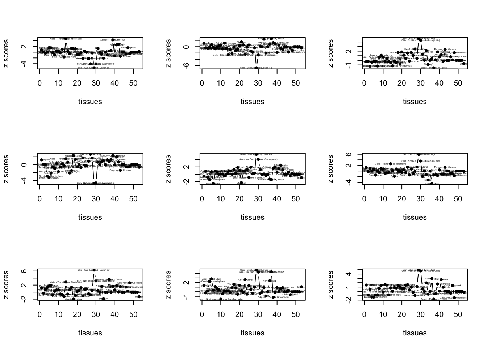
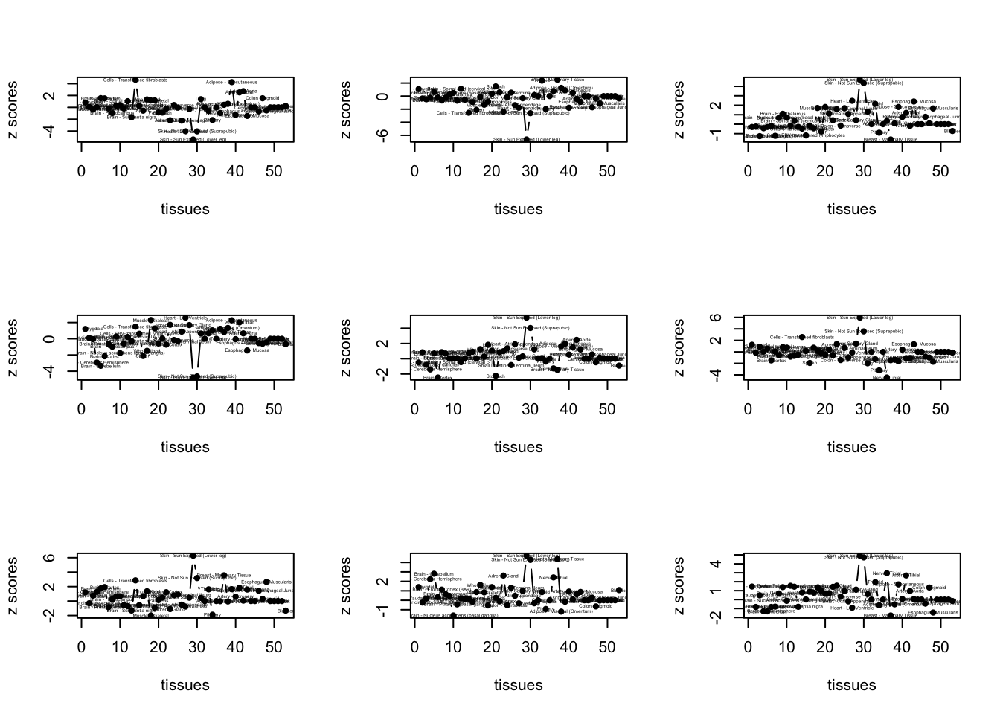
 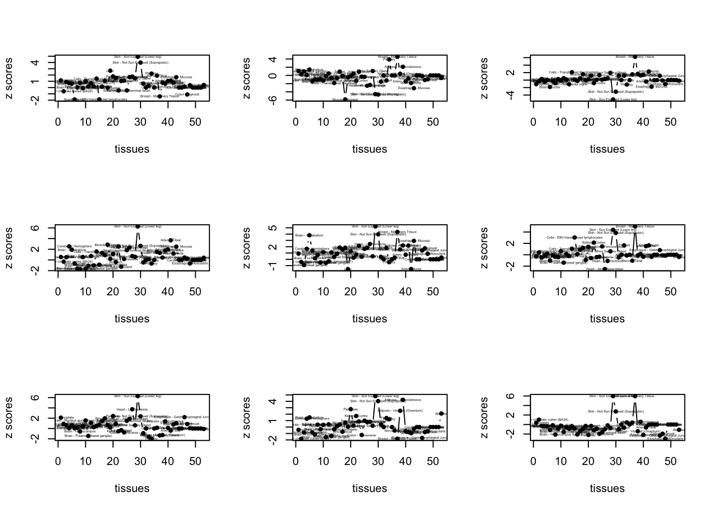
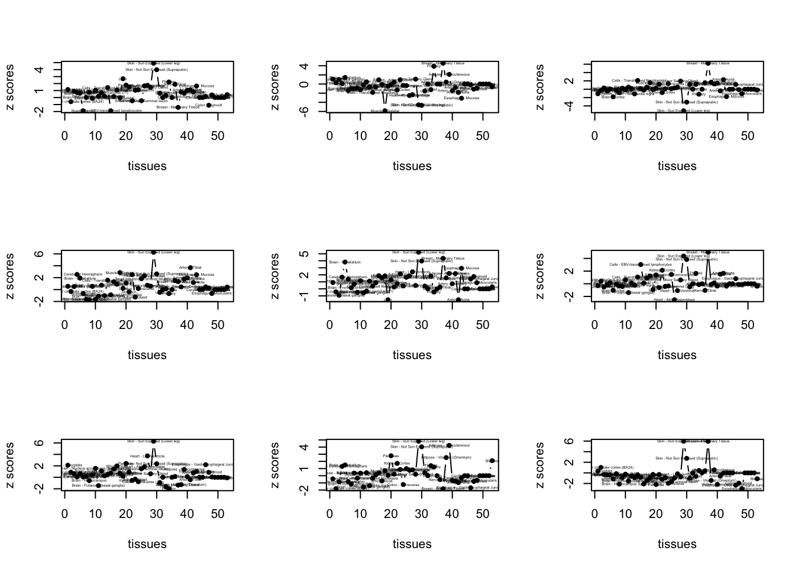
write.table(imp_genes_names, file = "../utilities/sex_flash/skin.txt", quote = FALSE, row.names = FALSE, col.names = FALSE)
out <- mygene::queryMany(imp_genes_names[1:50], scopes="ensembl.gene", fields=c("name", "summary"), species="human");## Finishedcbind.data.frame(out$name, out$summary)## out$name
## 1 Purkinje cell protein 4 like 1
## 2 alcohol dehydrogenase 1B (class I), beta polypeptide
## 3 arachidonate 15-lipoxygenase, type B
## 4 SPARC/osteonectin, cwcv and kazal like domains proteoglycan 1
## 5 sterol regulatory element binding transcription factor 1
## 6 procollagen C-endopeptidase enhancer 2
## 7 ankyrin repeat domain 65
## 8 leucine rich repeat containing 41
## 9 hedgehog acyltransferase
## 10 isocitrate dehydrogenase (NADP(+)) 2, mitochondrial
## 11 hydroxysteroid 17-beta dehydrogenase 14
## 12 transforming growth factor beta receptor 3
## 13 COMM domain containing 7
## 14 MARCKS like 1
## 15 transcription factor 7
## 16 FYN proto-oncogene, Src family tyrosine kinase
## 17 aldehyde dehydrogenase 18 family member A1
## 18 keratin 16
## 19 F-box protein 6
## 20 apolipoprotein C1
## 21 <NA>
## 22 acyl-CoA thioesterase 7
## 23 reticulophagy regulator 1
## 24 extracellular matrix protein 1
## 25 phospholipase C delta 3
## 26 fibulin 5
## 27 interleukin 16
## 28 glutathione synthetase
## 29 uronyl 2-sulfotransferase
## 30 natriuretic peptide receptor 2
## 31 retinol binding protein 1
## 32 suppression of tumorigenicity 14
## 33 ceruloplasmin
## 34 laminin subunit gamma 1
## 35 adhesion G protein-coupled receptor G1
## 36 matrix metallopeptidase 14
## 37 glutamic-oxaloacetic transaminase 2
## 38 elastin
## 39 cyclin dependent kinase inhibitor 1C
## 40 <NA>
## 41 <NA>
## 42 ATP binding cassette subfamily A member 9
## 43 syntaxin 6
## 44 tetraspanin 4
## 45 proopiomelanocortin
## 46 glycerol-3-phosphate acyltransferase 3
## 47 neuropilin and tolloid like 2
## 48 keratin 6A
## 49 coronin 6
## 50 <NA>
## out$summary
## 1 <NA>
## 2 The protein encoded by this gene is a member of the alcohol dehydrogenase family. Members of this enzyme family metabolize a wide variety of substrates, including ethanol, retinol, other aliphatic alcohols, hydroxysteroids, and lipid peroxidation products. This encoded protein, consisting of several homo- and heterodimers of alpha, beta, and gamma subunits, exhibits high activity for ethanol oxidation and plays a major role in ethanol catabolism. Three genes encoding alpha, beta and gamma subunits are tandemly organized in a genomic segment as a gene cluster. Two transcript variants encoding different isoforms have been found for this gene.
## 3 This gene encodes a member of the lipoxygenase family of structurally related nonheme iron dioxygenases involved in the production of fatty acid hydroperoxides. The encoded protein converts arachidonic acid exclusively to 15S-hydroperoxyeicosatetraenoic acid, while metabolizing linoleic acid less effectively. This gene is located in a cluster of related genes and a pseudogene that spans approximately 100 kilobases on the short arm of chromosome 17. Alternatively spliced transcript variants encoding different isoforms have been described.
## 4 This gene encodes the protein core of a seminal plasma proteoglycan containing chondroitin- and heparan-sulfate chains. The protein's function is unknown, although similarity to thyropin-type cysteine protease-inhibitors suggests its function may be related to protease inhibition.
## 5 This gene encodes a transcription factor that binds to the sterol regulatory element-1 (SRE1), which is a decamer flanking the low density lipoprotein receptor gene and some genes involved in sterol biosynthesis. The protein is synthesized as a precursor that is attached to the nuclear membrane and endoplasmic reticulum. Following cleavage, the mature protein translocates to the nucleus and activates transcription by binding to the SRE1. Sterols inhibit the cleavage of the precursor, and the mature nuclear form is rapidly catabolized, thereby reducing transcription. The protein is a member of the basic helix-loop-helix-leucine zipper (bHLH-Zip) transcription factor family. This gene is located within the Smith-Magenis syndrome region on chromosome 17.
## 6 <NA>
## 7 <NA>
## 8 <NA>
## 9 'Skinny hedgehog' (SKI1) encodes an enzyme that acts within the secretory pathway to catalyze amino-terminal palmitoylation of 'hedgehog' (see MIM 600725).
## 10 Isocitrate dehydrogenases catalyze the oxidative decarboxylation of isocitrate to 2-oxoglutarate. These enzymes belong to two distinct subclasses, one of which utilizes NAD(+) as the electron acceptor and the other NADP(+). Five isocitrate dehydrogenases have been reported: three NAD(+)-dependent isocitrate dehydrogenases, which localize to the mitochondrial matrix, and two NADP(+)-dependent isocitrate dehydrogenases, one of which is mitochondrial and the other predominantly cytosolic. Each NADP(+)-dependent isozyme is a homodimer. The protein encoded by this gene is the NADP(+)-dependent isocitrate dehydrogenase found in the mitochondria. It plays a role in intermediary metabolism and energy production. This protein may tightly associate or interact with the pyruvate dehydrogenase complex. Alternative splicing results in multiple transcript variants.
## 11 17-beta-hydroxysteroid dehydrogenases, such as HSD17B14, are primarily involved in metabolism of steroids at the C17 position and also of other substrates, such as fatty acids, prostaglandins, and xenobiotics (Lukacik et al., 2007 [PubMed 17067289]).
## 12 This locus encodes the transforming growth factor (TGF)-beta type III receptor. The encoded receptor is a membrane proteoglycan that often functions as a co-receptor with other TGF-beta receptor superfamily members. Ectodomain shedding produces soluble TGFBR3, which may inhibit TGFB signaling. Decreased expression of this receptor has been observed in various cancers. Alternatively spliced transcript variants encoding different isoforms have been identified for this gene.
## 13 <NA>
## 14 This gene encodes a member of the myristoylated alanine-rich C-kinase substrate (MARCKS) family. Members of this family play a role in cytoskeletal regulation, protein kinase C signaling and calmodulin signaling. The encoded protein affects the formation of adherens junction. Alternative splicing results in multiple transcript variants. Pseudogenes of this gene are located on the long arm of chromosomes 6 and 10.
## 15 This gene encodes a member of the T-cell factor/lymphoid enhancer-binding factor family of high mobility group (HMG) box transcriptional activators. This gene is expressed predominantly in T-cells and plays a critical role in natural killer cell and innate lymphoid cell development. The encoded protein forms a complex with beta-catenin and activates transcription through a Wnt/beta-catenin signaling pathway. Mice with a knockout of this gene are viable and fertile, but display a block in T-lymphocyte differentiation. Alternative splicing results in multiple transcript variants. Naturally-occurring isoforms lacking the N-terminal beta-catenin interaction domain may act as dominant negative regulators of Wnt signaling.
## 16 This gene is a member of the protein-tyrosine kinase oncogene family. It encodes a membrane-associated tyrosine kinase that has been implicated in the control of cell growth. The protein associates with the p85 subunit of phosphatidylinositol 3-kinase and interacts with the fyn-binding protein. Alternatively spliced transcript variants encoding distinct isoforms exist.
## 17 This gene is a member of the aldehyde dehydrogenase family and encodes a bifunctional ATP- and NADPH-dependent mitochondrial enzyme with both gamma-glutamyl kinase and gamma-glutamyl phosphate reductase activities. The encoded protein catalyzes the reduction of glutamate to delta1-pyrroline-5-carboxylate, a critical step in the de novo biosynthesis of proline, ornithine and arginine. Mutations in this gene lead to hyperammonemia, hypoornithinemia, hypocitrullinemia, hypoargininemia and hypoprolinemia and may be associated with neurodegeneration, cataracts and connective tissue diseases. Alternatively spliced transcript variants, encoding different isoforms, have been described for this gene.
## 18 The protein encoded by this gene is a member of the keratin gene family. The keratins are intermediate filament proteins responsible for the structural integrity of epithelial cells and are subdivided into cytokeratins and hair keratins. Most of the type I cytokeratins consist of acidic proteins which are arranged in pairs of heterotypic keratin chains and are clustered in a region of chromosome 17q12-q21. This keratin has been coexpressed with keratin 14 in a number of epithelial tissues, including esophagus, tongue, and hair follicles. Mutations in this gene are associated with type 1 pachyonychia congenita, non-epidermolytic palmoplantar keratoderma and unilateral palmoplantar verrucous nevus.
## 19 This gene encodes a member of the F-box protein family which is characterized by an approximately 40 amino acid motif, the F-box. The F-box proteins constitute one of the four subunits of the ubiquitin protein ligase complex called SCFs (SKP1-cullin-F-box), which function in phosphorylation-dependent ubiquitination. The F-box proteins are divided into 3 classes: Fbws containing WD-40 domains, Fbls containing leucine-rich repeats, and Fbxs containing either different protein-protein interaction modules or no recognizable motifs. The protein encoded by this gene belongs to the Fbxs class, and its C-terminal region is highly similar to that of rat NFB42 (neural F Box 42 kDa) which may be involved in the control of the cell cycle.
## 20 This gene encodes a member of the apolipoprotein C1 family. This gene is expressed primarily in the liver, and it is activated when monocytes differentiate into macrophages. The encoded protein plays a central role in high density lipoprotein (HDL) and very low density lipoprotein (VLDL) metabolism. This protein has also been shown to inhibit cholesteryl ester transfer protein in plasma. A pseudogene of this gene is located 4 kb downstream in the same orientation, on the same chromosome. This gene is mapped to chromosome 19, where it resides within a apolipoprotein gene cluster. Alternative splicing and the use of alternative promoters results in multiple transcript variants.
## 21 <NA>
## 22 This gene encodes a member of the acyl coenzyme family. The encoded protein hydrolyzes the CoA thioester of palmitoyl-CoA and other long-chain fatty acids. Decreased expression of this gene may be associated with mesial temporal lobe epilepsy. Alternatively spliced transcript variants encoding distinct isoforms with different subcellular locations have been characterized.
## 23 The protein encoded by this gene is a cis-Golgi transmembrane protein that may be necessary for the long-term survival of nociceptive and autonomic ganglion neurons. Mutations in this gene are a cause of hereditary sensory and autonomic neuropathy type IIB (HSAN IIB), and this gene may also play a role in susceptibility to vascular dementia. Alternatively spliced transcript variants encoding multiple isoforms have been observed for this gene.
## 24 This gene encodes a soluble protein that is involved in endochondral bone formation, angiogenesis, and tumor biology. It also interacts with a variety of extracellular and structural proteins, contributing to the maintenance of skin integrity and homeostasis. Mutations in this gene are associated with lipoid proteinosis disorder (also known as hyalinosis cutis et mucosae or Urbach-Wiethe disease) that is characterized by generalized thickening of skin, mucosae and certain viscera. Alternatively spliced transcript variants encoding distinct isoforms have been described for this gene.
## 25 This gene encodes a member of the phospholipase C family, which catalyze the hydrolysis of phosphatidylinositol 4,5-bisphosphate to generate the second messengers diacylglycerol and inositol 1,4,5-trisphosphate (IP3). Diacylglycerol and IP3 mediate a variety of cellular responses to extracellular stimuli by inducing protein kinase C and increasing cytosolic Ca(2+) concentrations. This enzyme localizes to the plasma membrane and requires calcium for activation. Its activity is inhibited by spermine, sphingosine, and several phospholipids.
## 26 The protein encoded by this gene is a secreted, extracellular matrix protein containing an Arg-Gly-Asp (RGD) motif and calcium-binding EGF-like domains. It promotes adhesion of endothelial cells through interaction of integrins and the RGD motif. It is prominently expressed in developing arteries but less so in adult vessels. However, its expression is reinduced in balloon-injured vessels and atherosclerotic lesions, notably in intimal vascular smooth muscle cells and endothelial cells. Therefore, the protein encoded by this gene may play a role in vascular development and remodeling. Defects in this gene are a cause of autosomal dominant cutis laxa, autosomal recessive cutis laxa type I (CL type I), and age-related macular degeneration type 3 (ARMD3).
## 27 The protein encoded by this gene is a pleiotropic cytokine that functions as a chemoattractant, a modulator of T cell activation, and an inhibitor of HIV replication. The signaling process of this cytokine is mediated by CD4. The product of this gene undergoes proteolytic processing, which is found to yield two functional proteins. The cytokine function is exclusively attributed to the secreted C-terminal peptide, while the N-terminal product may play a role in cell cycle control. Caspase 3 is reported to be involved in the proteolytic processing of this protein. Alternate splicing results in multiple transcript variants.
## 28 Glutathione is important for a variety of biological functions, including protection of cells from oxidative damage by free radicals, detoxification of xenobiotics, and membrane transport. The protein encoded by this gene functions as a homodimer to catalyze the second step of glutathione biosynthesis, which is the ATP-dependent conversion of gamma-L-glutamyl-L-cysteine to glutathione. Defects in this gene are a cause of glutathione synthetase deficiency.
## 29 Uronyl 2-sulfotransferase transfers sulfate to the 2-position of uronyl residues, such as iduronyl residues in dermatan sulfate and glucuronyl residues in chondroitin sulfate (Kobayashi et al., 1999 [PubMed 10187838]).
## 30 This gene encodes natriuretic peptide receptor B, one of two integral membrane receptors for natriuretic peptides. Both NPR1 and NPR2 contain five functional domains: an extracellular ligand-binding domain, a single membrane-spanning region, and intracellularly a protein kinase homology domain, a helical hinge region involved in oligomerization, and a carboxyl-terminal guanylyl cyclase catalytic domain. The protein is the primary receptor for C-type natriuretic peptide (CNP), which upon ligand binding exhibits greatly increased guanylyl cyclase activity. Mutations in this gene are the cause of acromesomelic dysplasia Maroteaux type.
## 31 This gene encodes the carrier protein involved in the transport of retinol (vitamin A alcohol) from the liver storage site to peripheral tissue. Vitamin A is a fat-soluble vitamin necessary for growth, reproduction, differentiation of epithelial tissues, and vision. Multiple transcript variants encoding different isoforms have been found for this gene.
## 32 The protein encoded by this gene is an epithelial-derived, integral membrane serine protease. This protease forms a complex with the Kunitz-type serine protease inhibitor, HAI-1, and is found to be activated by sphingosine 1-phosphate. This protease has been shown to cleave and activate hepatocyte growth factor/scattering factor, and urokinase plasminogen activator, which suggest the function of this protease as an epithelial membrane activator for other proteases and latent growth factors. The expression of this protease has been associated with breast, colon, prostate, and ovarian tumors, which implicates its role in cancer invasion, and metastasis.
## 33 The protein encoded by this gene is a metalloprotein that binds most of the copper in plasma and is involved in the peroxidation of Fe(II)transferrin to Fe(III) transferrin. Mutations in this gene cause aceruloplasminemia, which results in iron accumulation and tissue damage, and is associated with diabetes and neurologic abnormalities. Two transcript variants, one protein-coding and the other not protein-coding, have been found for this gene.
## 34 Laminins, a family of extracellular matrix glycoproteins, are the major noncollagenous constituent of basement membranes. They have been implicated in a wide variety of biological processes including cell adhesion, differentiation, migration, signaling, neurite outgrowth and metastasis. Laminins, composed of 3 non identical chains: laminin alpha, beta and gamma (formerly A, B1, and B2, respectively), have a cruciform structure consisting of 3 short arms, each formed by a different chain, and a long arm composed of all 3 chains. Each laminin chain is a multidomain protein encoded by a distinct gene. Several isoforms of each chain have been described. Different alpha, beta and gamma chain isomers combine to give rise to different heterotrimeric laminin isoforms which are designated by Arabic numerals in the order of their discovery, i.e. alpha1beta1gamma1 heterotrimer is laminin 1. The biological functions of the different chains and trimer molecules are largely unknown, but some of the chains have been shown to differ with respect to their tissue distribution, presumably reflecting diverse functions in vivo. This gene encodes the gamma chain isoform laminin, gamma 1. The gamma 1 chain, formerly thought to be a beta chain, contains structural domains similar to beta chains, however, lacks the short alpha region separating domains I and II. The structural organization of this gene also suggested that it had diverged considerably from the beta chain genes. Embryos of transgenic mice in which both alleles of the gamma 1 chain gene were inactivated by homologous recombination, lacked basement membranes, indicating that laminin, gamma 1 chain is necessary for laminin heterotrimer assembly. It has been inferred by analogy with the strikingly similar 3' UTR sequence in mouse laminin gamma 1 cDNA, that multiple polyadenylation sites are utilized in human to generate the 2 different sized mRNAs (5.5 and 7.5 kb) seen on Northern analysis.
## 35 This gene encodes a member of the G protein-coupled receptor family and regulates brain cortical patterning. The encoded protein binds specifically to transglutaminase 2, a component of tissue and tumor stroma implicated as an inhibitor of tumor progression. Mutations in this gene are associated with a brain malformation known as bilateral frontoparietal polymicrogyria. Alternative splicing results in multiple transcript variants.
## 36 Proteins of the matrix metalloproteinase (MMP) family are involved in the breakdown of extracellular matrix in normal physiological processes, such as embryonic development, reproduction, and tissue remodeling, as well as in disease processes, such as arthritis and metastasis. Most MMP's are secreted as inactive proproteins which are activated when cleaved by extracellular proteinases. However, the protein encoded by this gene is a member of the membrane-type MMP (MT-MMP) subfamily; each member of this subfamily contains a potential transmembrane domain suggesting that these proteins are expressed at the cell surface rather than secreted. This protein activates MMP2 protein, and this activity may be involved in tumor invasion.
## 37 Glutamic-oxaloacetic transaminase is a pyridoxal phosphate-dependent enzyme which exists in cytoplasmic and inner-membrane mitochondrial forms, GOT1 and GOT2, respectively. GOT plays a role in amino acid metabolism and the urea and tricarboxylic acid cycles. The two enzymes are homodimeric and show close homology. Two transcript variants encoding different isoforms have been found for this gene.
## 38 This gene encodes a protein that is one of the two components of elastic fibers. The encoded protein is rich in hydrophobic amino acids such as glycine and proline, which form mobile hydrophobic regions bounded by crosslinks between lysine residues. Deletions and mutations in this gene are associated with supravalvular aortic stenosis (SVAS) and autosomal dominant cutis laxa. Multiple transcript variants encoding different isoforms have been found for this gene.
## 39 This gene is imprinted, with preferential expression of the maternal allele. The encoded protein is a tight-binding, strong inhibitor of several G1 cyclin/Cdk complexes and a negative regulator of cell proliferation. Mutations in this gene are implicated in sporadic cancers and Beckwith-Wiedemann syndorome, suggesting that this gene is a tumor suppressor candidate. Three transcript variants encoding two different isoforms have been found for this gene.
## 40 <NA>
## 41 <NA>
## 42 This gene is a member of the superfamily of ATP-binding cassette (ABC) transporters and the encoded protein contains two transmembrane domains and two nucleotide binding folds. ABC proteins transport various molecules across extra- and intracellular membranes. ABC genes are divided into seven distinct subfamilies (ABC1, MDR/TAP, MRP, ALD, OABP, GCN20, and White). This gene is a member of the ABC1 subfamily and is clustered with four other ABC1 family members on chromosome 17q24. Transcriptional expression of this gene is induced during monocyte differentiation into macrophages and is suppressed by cholesterol import.
## 43 <NA>
## 44 The protein encoded by this gene is a member of the transmembrane 4 superfamily, also known as the tetraspanin family. Most of these members are cell-surface proteins that are characterized by the presence of four hydrophobic domains. The proteins mediate signal transduction events that play a role in the regulation of cell development, activation, growth and motility. This encoded protein is a cell surface glycoprotein and is similar in sequence to its family member CD53 antigen. It is known to complex with integrins and other transmembrane 4 superfamily proteins. Alternatively spliced transcript variants encoding different isoforms have been identified.
## 45 This gene encodes a preproprotein that undergoes extensive, tissue-specific, post-translational processing via cleavage by subtilisin-like enzymes known as prohormone convertases. There are eight potential cleavage sites within the preproprotein and, depending on tissue type and the available convertases, processing may yield as many as ten biologically active peptides involved in diverse cellular functions. The encoded protein is synthesized mainly in corticotroph cells of the anterior pituitary where four cleavage sites are used; adrenocorticotrophin, essential for normal steroidogenesis and the maintenance of normal adrenal weight, and lipotropin beta are the major end products. In other tissues, including the hypothalamus, placenta, and epithelium, all cleavage sites may be used, giving rise to peptides with roles in pain and energy homeostasis, melanocyte stimulation, and immune modulation. These include several distinct melanotropins, lipotropins, and endorphins that are contained within the adrenocorticotrophin and beta-lipotropin peptides. The antimicrobial melanotropin alpha peptide exhibits antibacterial and antifungal activity. Mutations in this gene have been associated with early onset obesity, adrenal insufficiency, and red hair pigmentation. Alternatively spliced transcript variants encoding the same protein have been described.
## 46 This gene encodes a member of the lysophosphatidic acid acyltransferase protein family. The encoded protein is an enzyme which catalyzes the conversion of glycerol-3-phosphate to lysophosphatidic acid in the synthesis of triacylglycerol. Multiple alternatively spliced variants, encoding the same protein, have been identified.
## 47 This gene encodes a predicted transmembrane protein containing two extracellular CUB domains followed by a low-density lipoprotein class A (LDLa) domain. A similar gene in rats encodes a protein that modulates glutamate signaling in the brain by regulating kainate receptor function. Expression of this gene may be a biomarker for proliferating infantile hemangiomas. A pseudogene of this gene is located on the long arm of chromosome 8. Alternatively spliced transcript variants encoding multiple isoforms have been observed for this gene.
## 48 The protein encoded by this gene is a member of the keratin gene family. The type II cytokeratins consist of basic or neutral proteins which are arranged in pairs of heterotypic keratin chains coexpressed during differentiation of simple and stratified epithelial tissues. As many as six of this type II cytokeratin (KRT6) have been identified; the multiplicity of the genes is attributed to successive gene duplication events. The genes are expressed with family members KRT16 and/or KRT17 in the filiform papillae of the tongue, the stratified epithelial lining of oral mucosa and esophagus, the outer root sheath of hair follicles, and the glandular epithelia. This KRT6 gene in particular encodes the most abundant isoform. Mutations in these genes have been associated with pachyonychia congenita. In addition, peptides from the C-terminal region of the protein have antimicrobial activity against bacterial pathogens. The type II cytokeratins are clustered in a region of chromosome 12q12-q13.
## 49 <NA>
## 50 <NA>pathway2 <- read.delim("../utilities/sex_flash/skin_pathway.tab")
if(length(which(pathway2$q.value < 0.05)) > 2){
pathway2 <- pathway2[which(pathway2$q.value < 0.1),]
}
maxpath = 75
pathway <- pathway2[1:min(maxpath, dim(pathway2)[1]), ]
ensembl_genes <- pathway$members_input_overlap
pathway_list_genes <- sapply(ensembl_genes, function(x) return(strsplit(as.character(x), "; ")))
all_genes <- Reduce(union, pathway_list_genes)
pathway_mat <- matrix(0, length(pathway_list_genes), length(all_genes))
for(l in 1:dim(pathway_mat)[1]){
pathway_mat[l, match(pathway_list_genes[[l]], all_genes)] <- 1
}
pathway_bimat <- (pathway_mat)%*%t(pathway_mat)
pathway_bimat_prop <- diag(1/sqrt(diag(pathway_bimat)), dim(pathway_bimat)[1]) %*% pathway_bimat %*% diag(1/sqrt(diag(pathway_bimat)), dim(pathway_bimat)[1])
col=c(rev(rgb(seq(1,0,length=1000),1,seq(1,0,length=1000))),
rgb(1,seq(1,0,length=1000),seq(1,0,length=1000)))
heatmap(pathway_bimat_prop, labRow = pathway$pathway, labCol = pathway$pathway, cexRow = 0.3, cexCol = 0.3, col = col, zlim = c(-1,1),
scale = "none", margins = c(5, 5))
data <- get(load("../output/sex_cor_nonmash.rda"))
zdat <- data$betahat/data$sebetahat
index <- grep("Adipose", U)
zdat_thresh <- apply(abs(zdat), 2, function(x) {
y <- median(x[index]) - median(x[-index])
return(y)})imp_genes_indices <- order(zdat_thresh, decreasing = TRUE)[1:100]
imp_genes_names <- gene_names_1[imp_genes_indices]
imp_genes_names[1:10]## [1] "ENSG00000236698" "ENSG00000173432" "ENSG00000187676"
## [4] "ENSG00000255071" "ENSG00000160111" "ENSG00000134339"
## [7] "ENSG00000115255" "ENSG00000258484" "ENSG00000182230"
## [10] "ENSG00000134882"par(mfrow=c(3,3))
for(m in 1:length(imp_genes_indices)){
plot(1:53, zdat[order_index,imp_genes_indices[m]], pch=20, type="b", xlab = "tissues", ylab="z scores")
text(1:53, zdat[order_index,imp_genes_indices[m]], U[order_index], cex=0.3)
}


 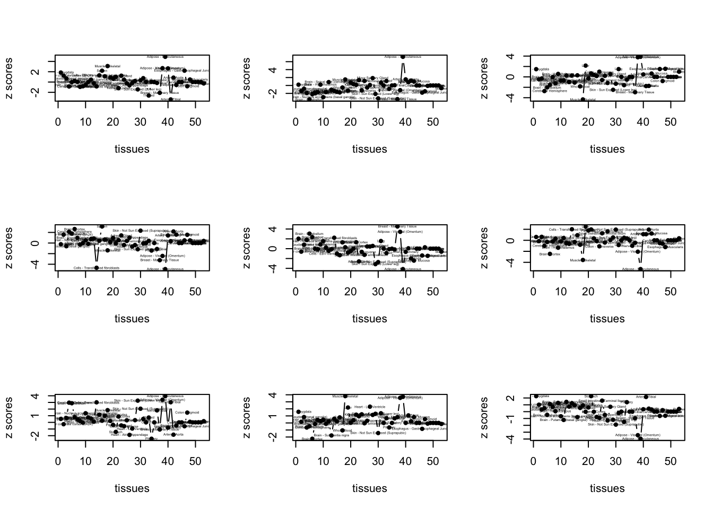
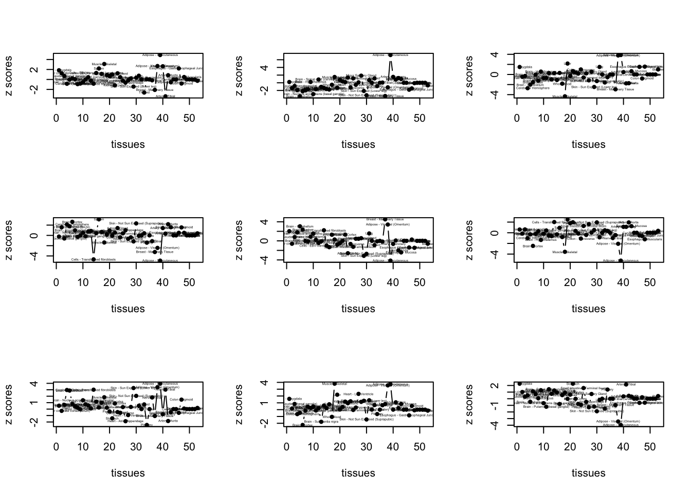
write.table(imp_genes_names, file = "../utilities/sex_flash/adipose.txt", quote = FALSE, row.names = FALSE, col.names = FALSE)
out <- mygene::queryMany(imp_genes_names[1:50], scopes="ensembl.gene", fields=c("name", "summary"), species="human");## Finishedcbind.data.frame(out$name, out$summary)## out$name
## 1 eukaryotic translation initiation factor 1A, X-linked pseudogene 1
## 2 serum amyloid A1
## 3 beta 3-glucosyltransferase
## 4 SAA2-SAA4 readthrough
## 5 C3 and PZP like, alpha-2-macroglobulin domain containing 8
## 6 serum amyloid A2
## 7 receptor accessory protein 6
## 8 sperm equatorial segment protein 1
## 9 family with sequence similarity 153 member B
## 10 UBA domain containing 2
## 11 glycogen synthase 1
## 12 CLPTM1, transmembrane protein
## 13 adenosine deaminase
## 14 mitochondrial trans-2-enoyl-CoA reductase
## 15 TNF receptor superfamily member 19
## 16 DNA polymerase nu
## 17 long intergenic non-protein coding RNA 2298
## 18 Putative eukaryotic translation initiation factor 2 subunit 3-like protein
## 19 <NA>
## 20 retinol binding protein 4
## 21 ATP synthase, H+ transporting, mitochondrial F1 complex, beta polypeptide
## 22 diphosphoinositol pentakisphosphate kinase 1
## 23 DEAD-box helicase 43
## 24 HDGF like 3
## 25 ADAM metallopeptidase domain 23
## 26 phosphatidylinositol glycan anchor biosynthesis class S
## 27 sorting nexin 7
## 28 cAMP-dependent protein kinase inhibitor gamma
## 29 myotilin
## 30 secretory carrier membrane protein 3
## 31 acyl-CoA synthetase family member 2
## 32 beta-1,4-galactosyltransferase 7
## 33 FSHD region gene 1 family member B, pseudogene
## 34 prolyl endopeptidase
## 35 N-acetyl-alpha-glucosaminidase
## 36 mitochondrial ribosomal protein S22
## 37 methyl-CpG binding domain protein 2
## 38 annexin A6
## 39 alpha-2-glycoprotein 1, zinc-binding
## 40 Yip1 interacting factor homolog A, membrane trafficking protein
## 41 proprotein convertase subtilisin/kexin type 6
## 42 family with sequence similarity 184 member A
## 43 STEAP family member 1
## 44 retention in endoplasmic reticulum sorting receptor 1
## 45 growth hormone inducible transmembrane protein
## 46 ubiquinol-cytochrome c reductase hinge protein
## 47 staphylococcal nuclease and tudor domain containing 1
## 48 solute carrier family 41 member 2
## 49 mitochondrial elongation factor 1
## 50 regulator of microtubule dynamics 3
## out$summary
## 1 <NA>
## 2 This gene encodes a member of the serum amyloid A family of apolipoproteins. The encoded preproprotein is proteolytically processed to generate the mature protein. This protein is a major acute phase protein that is highly expressed in response to inflammation and tissue injury. This protein also plays an important role in HDL metabolism and cholesterol homeostasis. High levels of this protein are associated with chronic inflammatory diseases including atherosclerosis, rheumatoid arthritis, Alzheimer's disease and Crohn's disease. This protein may also be a potential biomarker for certain tumors. Alternate splicing results in multiple transcript variants that encode the same protein. A pseudogene of this gene is found on chromosome 11.
## 3 The protein encoded by this gene is a beta-1,3-glucosyltransferase that transfers glucose to O-linked fucosylglycans on thrombospondin type-1 repeats (TSRs) of several proteins. The encoded protein is a type II membrane protein. Defects in this gene are a cause of Peters-plus syndrome (PPS).
## 4 This locus represents naturally occurring read-through transcription between the neighboring serum amyloid A2 and serum amyloid A4 genes on chromosome 11. The read-through transcript produces a fusion protein that shares sequence identity with each individual gene product.
## 5 This gene encodes a member of the protease inhibitor I39 (alpha-2-macroglobulin) family of proteins. These proteins are important in innate and acquired immunity. The encoded protein is membrane-associated and proteolytically processed to generate two chains. Mutations in this gene cause a form of anterior segment dysgenesis, a developmental disorder of the eye.
## 6 <NA>
## 7 The protein encoded by this gene may be involved in the transport of receptors from the endoplasmic reticulum (ER) to the cell surface. The encoded protein may also play a role in regulating ER membrane structure. This gene is required for the proper development of retinal rods and photoreceptors, with defects in this gene being associated with retinitis pigmentosa 77.
## 8 The encoded protein is a human alloantigen involved in sperm-egg binding and fusion.
## 9 <NA>
## 10 <NA>
## 11 The protein encoded by this gene catalyzes the addition of glucose monomers to the growing glycogen molecule through the formation of alpha-1,4-glycoside linkages. Mutations in this gene are associated with muscle glycogen storage disease. Alternatively spliced transcript variants encoding different isoforms have been found for this gene.
## 12 <NA>
## 13 This gene encodes an enzyme that catalyzes the hydrolysis of adenosine to inosine. Various mutations have been described for this gene and have been linked to human diseases. Deficiency in this enzyme causes a form of severe combined immunodeficiency disease (SCID), in which there is dysfunction of both B and T lymphocytes with impaired cellular immunity and decreased production of immunoglobulins, whereas elevated levels of this enzyme have been associated with congenital hemolytic anemia.
## 14 The protein encoded by this gene is an oxidoreductase that catalyzes the last step in mitochondrial fatty acid synthesis. Defects in this gene are a cause of childhood-onset dystonia and optic atrophy.
## 15 The protein encoded by this gene is a member of the TNF-receptor superfamily. This receptor is highly expressed during embryonic development. It has been shown to interact with TRAF family members, and to activate JNK signaling pathway when overexpressed in cells. This receptor is capable of inducing apoptosis by a caspase-independent mechanism, and it is thought to play an essential role in embryonic development. Alternatively spliced transcript variants encoding distinct isoforms have been described.
## 16 This gene encodes a DNA polymerase type-A family member. The encoded protein plays a role in DNA repair and homologous recombination. This gene shares its 5' exons with some transcripts from overlapping GeneID: 79441, which encodes an augmentin-like protein complex subunit.
## 17 <NA>
## 18 <NA>
## 19 <NA>
## 20 This protein belongs to the lipocalin family and is the specific carrier for retinol (vitamin A alcohol) in the blood. It delivers retinol from the liver stores to the peripheral tissues. In plasma, the RBP-retinol complex interacts with transthyretin which prevents its loss by filtration through the kidney glomeruli. A deficiency of vitamin A blocks secretion of the binding protein posttranslationally and results in defective delivery and supply to the epidermal cells.
## 21 This gene encodes a subunit of mitochondrial ATP synthase. Mitochondrial ATP synthase catalyzes ATP synthesis, utilizing an electrochemical gradient of protons across the inner membrane during oxidative phosphorylation. ATP synthase is composed of two linked multi-subunit complexes: the soluble catalytic core, F1, and the membrane-spanning component, Fo, comprising the proton channel. The catalytic portion of mitochondrial ATP synthase consists of 5 different subunits (alpha, beta, gamma, delta, and epsilon) assembled with a stoichiometry of 3 alpha, 3 beta, and a single representative of the other 3. The proton channel consists of three main subunits (a, b, c). This gene encodes the beta subunit of the catalytic core.
## 22 This gene encodes a dual functional inositol kinase. The encoded enzyme converts inositol hexakisphosphate to diphosphoinositol pentakisphosphate and diphosphoinositol pentakisphosphate to bis-diphosphoinositol tetrakisphosphate. This protein may be important for intracellular signaling pathways. Alternate splicing results in multiple transcript variants. A pseudogene of this gene is found on chromosome 15.
## 23 The protein encoded by this gene is an ATP-dependent RNA helicase in the DEAD-box family and displays tumor-specific expression.
## 24 <NA>
## 25 This gene encodes a member of the ADAM (a disintegrin and metalloprotease domain) family. Members of this family are membrane-anchored proteins structurally related to snake venom disintegrins and have been implicated in a variety of biological processes involving cell-cell and cell-matrix interactions, including fertilization, muscle development, and neurogenesis. It is reported that inactivation of this gene is associated with tumorigenesis in human cancers.
## 26 This gene encodes a protein that is involved in GPI-anchor biosynthesis. The glycosylphosphatidylinositol (GPI) anchor is a glycolipid found on many blood cells and serves to anchor proteins to the cell surface. This gene encodes an essential component of the multisubunit enzyme, GPI transamidase. GPI transamidase mediates GPI anchoring in the endoplasmic reticulum, by catalyzing the transfer of fully assembled GPI units to proteins.
## 27 This gene encodes a member of the sorting nexin family. Members of this family contain a phox (PX) domain, which is a phosphoinositide binding domain, and are involved in intracellular trafficking. This protein does not contain a coiled coil region like some family members, and its exact function is unknown. Alternative splicing results in multiple transcript variants. A related pseudogene has been identified on chromosome 11.
## 28 This gene encodes a member of the protein kinase inhibitor family. Studies of a similar protein in mice suggest that this protein acts as a potent competitive cAMP-dependent protein kinase inhibitor, and is a predominant form of inhibitor in various tissues. The encoded protein may be involved in osteogenesis. Alternative splicing results in multiple transcript variants.
## 29 This gene encodes a cystoskeletal protein which plays a significant role in the stability of thin filaments during muscle contraction. This protein binds F-actin, crosslinks actin filaments, and prevents latrunculin A-induced filament disassembly. Mutations in this gene have been associated with limb-girdle muscular dystrophy and myofibrillar myopathies. Several alternatively spliced transcript variants of this gene have been described, but the full-length nature of some of these variants has not been determined.
## 30 This gene encodes an integral membrane protein that belongs to the secretory carrier membrane protein family. The encoded protein functions as a carrier to the cell surface in post-golgi recycling pathways. This protein is also involved in protein trafficking in endosomal pathways. Two transcript variants encoding different isoforms have been found for this gene.
## 31 <NA>
## 32 This gene is a member of the beta-1,4-galactosyltransferase (beta4GalT) family. Family members encode type II membrane-bound glycoproteins that appear to have exclusive specificity for the donor substrate UDP-galactose. Each beta4GalT member has a distinct function in the biosynthesis of different glycoconjugates and saccharide structures. As type II membrane proteins, they have an N-terminal hydrophobic signal sequence that directs the protein to the Golgi apparatus which then remains uncleaved to function as a transmembrane anchor. The enzyme encoded by this gene attaches the first galactose in the common carbohydrate-protein linkage (GlcA-beta1,3-Gal-beta1,3-Gal-beta1,4-Xyl-beta1-O-Ser) found in proteoglycans. This enzyme differs from other beta4GalTs because it lacks the conserved Cys residues found in beta4GalT1-beta4GalT6 and it is located in cis-Golgi instead of trans-Golgi. Mutations in this gene have been associated with the progeroid form of Ehlers-Danlos syndrome.
## 33 <NA>
## 34 The protein encoded by this gene is a cytosolic prolyl endopeptidase that cleaves peptide bonds on the C-terminal side of prolyl residues within peptides that are up to approximately 30 amino acids long. Prolyl endopeptidases have been reported to be involved in the maturation and degradation of peptide hormones and neuropeptides.
## 35 This gene encodes an enzyme that degrades heparan sulfate by hydrolysis of terminal N-acetyl-D-glucosamine residues in N-acetyl-alpha-D-glucosaminides. Defects in this gene are the cause of mucopolysaccharidosis type IIIB (MPS-IIIB), also known as Sanfilippo syndrome B. This disease is characterized by the lysosomal accumulation and urinary excretion of heparan sulfate.
## 36 Mammalian mitochondrial ribosomal proteins are encoded by nuclear genes and help in protein synthesis within the mitochondrion. Mitochondrial ribosomes (mitoribosomes) consist of a small 28S subunit and a large 39S subunit. They have an estimated 75% protein to rRNA composition compared to prokaryotic ribosomes, where this ratio is reversed. Another difference between mammalian mitoribosomes and prokaryotic ribosomes is that the latter contain a 5S rRNA. Among different species, the proteins comprising the mitoribosome differ greatly in sequence, and sometimes in biochemical properties, which prevents easy recognition by sequence homology. This gene encodes a 28S subunit protein that does not seem to have a counterpart in prokaryotic and fungal-mitochondrial ribosomes. This gene lies telomeric of and is transcribed in the opposite direction from the forkhead box L2 gene. A pseudogene corresponding to this gene is found on chromosome Xq.
## 37 DNA methylation is the major modification of eukaryotic genomes and plays an essential role in mammalian development. Human proteins MECP2, MBD1, MBD2, MBD3, and MBD4 comprise a family of nuclear proteins related by the presence in each of a methyl-CpG binding domain (MBD). Each of these proteins, with the exception of MBD3, is capable of binding specifically to methylated DNA. MECP2, MBD1 and MBD2 can also repress transcription from methylated gene promoters. The protein encoded by this gene may function as a mediator of the biological consequences of the methylation signal. It is also reported that the this protein functions as a demethylase to activate transcription, as DNA methylation causes gene silencing. Two transcript variants encoding different isoforms have been found for this gene.
## 38 Annexin VI belongs to a family of calcium-dependent membrane and phospholipid binding proteins. Several members of the annexin family have been implicated in membrane-related events along exocytotic and endocytotic pathways. The annexin VI gene is approximately 60 kbp long and contains 26 exons. It encodes a protein of about 68 kDa that consists of eight 68-amino acid repeats separated by linking sequences of variable lengths. It is highly similar to human annexins I and II sequences, each of which contain four such repeats. Annexin VI has been implicated in mediating the endosome aggregation and vesicle fusion in secreting epithelia during exocytosis. Alternatively spliced transcript variants have been described.
## 39 <NA>
## 40 <NA>
## 41 This gene encodes a member of the subtilisin-like proprotein convertase family, which includes proteases that process protein and peptide precursors trafficking through regulated or constitutive branches of the secretory pathway. The encoded protein undergoes an initial autocatalytic processing event in the ER to generate a heterodimer which exits the ER and sorts to the trans-Golgi network where a second autocatalytic event takes place and the catalytic activity is acquired. The encoded protease is constitutively secreted into the extracellular matrix and expressed in many tissues, including neuroendocrine, liver, gut, and brain. This gene encodes one of the seven basic amino acid-specific members which cleave their substrates at single or paired basic residues. Some of its substrates include transforming growth factor beta related proteins, proalbumin, and von Willebrand factor. This gene is thought to play a role in tumor progression and left-right patterning. Alternatively spliced transcript variants encoding different isoforms have been identified.
## 42 <NA>
## 43 This gene is predominantly expressed in prostate tissue, and is found to be upregulated in multiple cancer cell lines. The gene product is predicted to be a six-transmembrane protein, and was shown to be a cell surface antigen significantly expressed at cell-cell junctions.
## 44 The protein encoded by this gene is a multi-pass membrane protein that is localized to the golgi apparatus. It is involved in the retention of endoplasmic reticulum (ER) membrane proteins in the ER and retrieval of ER membrane proteins from the early Golgi compartment to facilitate gamma-secretase complex assembly.
## 45 <NA>
## 46 <NA>
## 47 This gene encodes a transcriptional co-activator that interacts with the acidic domain of Epstein-Barr virus nuclear antigen 2 (EBNA 2), a transcriptional activator that is required for B-lymphocyte transformation. Other transcription factors that interact with this protein are signal transducers and activators of transcription, STATs. This protein is also thought to be essential for normal cell growth. A similar protein in mammals and other organisms is a component of the RNA-induced silencing complex (RISC).
## 48 <NA>
## 49 <NA>
## 50 <NA>pathway2 <- read.delim("../utilities/sex_flash/adipose_pathway.tab")
if(length(which(pathway2$q.value < 0.05)) > 2){
pathway2 <- pathway2[which(pathway2$q.value < 0.1),]
}
maxpath = 75
pathway <- pathway2[1:min(maxpath, dim(pathway2)[1]), ]
ensembl_genes <- pathway$members_input_overlap
pathway_list_genes <- sapply(ensembl_genes, function(x) return(strsplit(as.character(x), "; ")))
all_genes <- Reduce(union, pathway_list_genes)
pathway_mat <- matrix(0, length(pathway_list_genes), length(all_genes))
for(l in 1:dim(pathway_mat)[1]){
pathway_mat[l, match(pathway_list_genes[[l]], all_genes)] <- 1
}
pathway_bimat <- (pathway_mat)%*%t(pathway_mat)
pathway_bimat_prop <- diag(1/sqrt(diag(pathway_bimat)), dim(pathway_bimat)[1]) %*% pathway_bimat %*% diag(1/sqrt(diag(pathway_bimat)), dim(pathway_bimat)[1])
col=c(rev(rgb(seq(1,0,length=1000),1,seq(1,0,length=1000))),
rgb(1,seq(1,0,length=1000),seq(1,0,length=1000)))
heatmap(pathway_bimat_prop, labRow = pathway$pathway, labCol = pathway$pathway, cexRow = 0.3, cexCol = 0.3, col = col, zlim = c(-1,1),
scale = "none", margins = c(5, 5))data <- get(load("../output/sex_cor_nonmash.rda"))
zdat <- data$betahat/data$sebetahat
index <- grep("Thyroid", U)
zdat_thresh <- apply(abs(zdat), 2, function(x) {
y <- median(x[index]) - median(x[-index])
return(y)})imp_genes_indices <- order(zdat_thresh, decreasing = TRUE)[1:100]
imp_genes_names <- gene_names_1[imp_genes_indices]
imp_genes_names[1:10]## [1] "ENSG00000171757" "ENSG00000121410" "ENSG00000163964"
## [4] "ENSG00000198780" "ENSG00000064726" "ENSG00000268230"
## [7] "ENSG00000173083" "ENSG00000224881" "ENSG00000213889"
## [10] "ENSG00000146094"par(mfrow=c(3,3))
for(m in 1:length(imp_genes_indices)){
plot(1:53, zdat[order_index,imp_genes_indices[m]], pch=20, type="b", xlab = "tissues", ylab="z scores")
text(1:53, zdat[order_index,imp_genes_indices[m]], U[order_index], cex=0.3)
}


write.table(imp_genes_names, file = "../utilities/sex_flash/thyroid.txt", quote = FALSE, row.names = FALSE, col.names = FALSE)
out <- mygene::queryMany(imp_genes_names[1:50], scopes="ensembl.gene", fields=c("name", "summary"), species="human");## Finished
## Pass returnall=TRUE to return lists of duplicate or missing query terms.cbind.data.frame(out$name, out$summary)## out$name
## 1 leucine rich repeat containing 34
## 2 alpha-1-B glycoprotein
## 3 phosphatidylinositol glycan anchor biosynthesis class X
## 4 family with sequence similarity 169 member A
## 5 BTB domain containing 1
## 6 <NA>
## 7 heparanase
## 8 <NA>
## 9 protein phosphatase, Mg2+/Mn2+ dependent 1N (putative)
## 10 docking protein 3
## 11 hydroxysteroid 11-beta dehydrogenase 1
## 12 eukaryotic translation initiation factor 1A, X-linked pseudogene 1
## 13 selenophosphate synthetase 1
## 14 caveolin 2
## 15 A1BG antisense RNA 1
## 16 sperm equatorial segment protein 1
## 17 long intergenic non-protein coding RNA 622
## 18 <NA>
## 19 FSHD region gene 1 family member B, pseudogene
## 20 diacylglycerol lipase beta
## 21 mex-3 RNA binding family member B
## 22 nucleosome assembly protein 1 like 5
## 23 family with sequence similarity 78 member A
## 24 tachykinin precursor 1
## 25 myelin expression factor 2
## 26 dCMP deaminase
## 27 DNA polymerase epsilon, catalytic subunit
## 28 <NA>
## 29 phosphatidylinositol-4,5-bisphosphate 3-kinase catalytic subunit delta
## 30 acid phosphatase 5, tartrate resistant
## 31 chromosome 8 open reading frame 33
## 32 kinesin family member 1A
## 33 HDGF like 3
## 34 chromosome 1 open reading frame 162
## 35 testis-specific kinase 2
## 36 <NA>
## 37 RAP2B, member of RAS oncogene family
## 38 chloride nucleotide-sensitive channel 1A
## 39 rhomboid 5 homolog 2
## 40 zinc finger and BTB domain containing 34
## 41 kelch like family member 8
## 42 osteoclast associated, immunoglobulin-like receptor
## 43 <NA>
## 44 PML-RARA regulated adaptor molecule 1
## 45 RWD domain containing 4
## 46 F-box protein 36
## 47 potassium voltage-gated channel subfamily A regulatory beta subunit 2
## 48 solute carrier family 37 member 2
## 49 neutrophil cytosolic factor 2
## 50 long intergenic non-protein coding RNA 1184
## out$summary
## 1 <NA>
## 2 The protein encoded by this gene is a plasma glycoprotein of unknown function. The protein shows sequence similarity to the variable regions of some immunoglobulin supergene family member proteins.
## 3 This gene encodes a type I transmembrane protein in the endoplasmic reticulum (ER). The protein is an essential component of glycosylphosphatidylinositol-mannosyltransferase I, which transfers the first of the four mannoses in the GPI-anchor precursors during GPI-anchor biosynthesis. Studies in rat indicate that the protein is translated from a non-AUG translation initiation site. Alternative splicing results in multiple transcript variants.
## 4 <NA>
## 5 The C-terminus of the protein encoded by this gene binds topoisomerase I. The N-terminus contains a proline-rich region and a BTB/POZ domain (broad-complex, Tramtrack and bric a brac/Pox virus and Zinc finger), both of which are typically involved in protein-protein interactions. Subcellularly, the protein localizes to cytoplasmic bodies. Alternative splicing results in multiple transcript variants encoding different isoforms.
## 6 <NA>
## 7 Heparan sulfate proteoglycans are major components of the basement membrane and extracellular matrix. The protein encoded by this gene is an enzyme that cleaves heparan sulfate proteoglycans to permit cell movement through remodeling of the extracellular matrix. In addition, this cleavage can release bioactive molecules from the extracellular matrix. Several transcript variants encoding different isoforms have been found for this gene.
## 8 <NA>
## 9 <NA>
## 10 <NA>
## 11 The protein encoded by this gene is a microsomal enzyme that catalyzes the conversion of the stress hormone cortisol to the inactive metabolite cortisone. In addition, the encoded protein can catalyze the reverse reaction, the conversion of cortisone to cortisol. Too much cortisol can lead to central obesity, and a particular variation in this gene has been associated with obesity and insulin resistance in children. Mutations in this gene and H6PD (hexose-6-phosphate dehydrogenase (glucose 1-dehydrogenase)) are the cause of cortisone reductase deficiency. Alternate splicing results in multiple transcript variants encoding the same protein.
## 12 <NA>
## 13 This gene encodes an enzyme that synthesizes selenophosphate from selenide and ATP. Selenophosphate is the selenium donor used to synthesize selenocysteine, which is co-translationally incorporated into selenoproteins at in-frame UGA codons.
## 14 The protein encoded by this gene is a major component of the inner surface of caveolae, small invaginations of the plasma membrane, and is involved in essential cellular functions, including signal transduction, lipid metabolism, cellular growth control and apoptosis. This protein may function as a tumor suppressor. This gene and related family member (CAV1) are located next to each other on chromosome 7, and express colocalizing proteins that form a stable hetero-oligomeric complex. Alternatively spliced transcript variants encoding different isoforms have been identified for this gene. Additional isoforms resulting from the use of alternate in-frame translation initiation codons have also been described, and shown to have preferential localization in the cell (PMID:11238462).
## 15 <NA>
## 16 The encoded protein is a human alloantigen involved in sperm-egg binding and fusion.
## 17 <NA>
## 18 <NA>
## 19 <NA>
## 20 <NA>
## 21 This gene encodes an RNA-binding phosphoprotein that is part of the MEX3 (muscle excess 3) family of translational regulators. The encoded protein contains N-terminal nuclear export and nuclear localization signals and is exported from the cytoplasm to the nucleus. The protein binds to RNA via two KH domains and also colocalizes with MEX3A, Dcp1A decapping factor and Argonaute proteins within P (processing) bodies.
## 22 This gene encodes a protein that shares sequence similarity to nucleosome assembly factors, but may be localized to the cytoplasm rather than the nucleus. Expression of this gene is downregulated in hepatocellular carcinomas. This gene is located within a differentially methylated region (DMR) and is imprinted and paternally expressed. There is a related pseudogene on chromosome 4.
## 23 <NA>
## 24 This gene encodes four products of the tachykinin peptide hormone family, substance P and neurokinin A, as well as the related peptides, neuropeptide K and neuropeptide gamma. These hormones are thought to function as neurotransmitters which interact with nerve receptors and smooth muscle cells. They are known to induce behavioral responses and function as vasodilators and secretagogues. Substance P is an antimicrobial peptide with antibacterial and antifungal properties. Multiple transcript variants encoding different isoforms have been found for this gene.
## 25 <NA>
## 26 The protein encoded by this gene catalyzes the deamination of dCMP to dUMP, the nucleotide substrate for thymidylate synthase. The encoded protein is allosterically activated by dCTP and inhibited by dTTP, and is found as a homohexamer. This protein uses zinc as a cofactor for its activity. Two transcript variants encoding different isoforms have been found for this gene.
## 27 This gene encodes the catalytic subunit of DNA polymerase epsilon. The enzyme is involved in DNA repair and chromosomal DNA replication. Mutations in this gene have been associated with colorectal cancer 12 and facial dysmorphism, immunodeficiency, livedo, and short stature.
## 28 <NA>
## 29 Phosphoinositide 3-kinases (PI3Ks) phosphorylate inositol lipids and are involved in the immune response. The protein encoded by this gene is a class I PI3K found primarily in leukocytes. Like other class I PI3Ks (p110-alpha p110-beta, and p110-gamma), the encoded protein binds p85 adapter proteins and GTP-bound RAS. However, unlike the other class I PI3Ks, this protein phosphorylates itself, not p85 protein.
## 30 This gene encodes an iron containing glycoprotein which catalyzes the conversion of orthophosphoric monoester to alcohol and orthophosphate. It is the most basic of the acid phosphatases and is the only form not inhibited by L(+)-tartrate.
## 31 <NA>
## 32 The protein encoded by this gene is a member of the kinesin family and functions as an anterograde motor protein that transports membranous organelles along axonal microtubules. Mutations at this locus have been associated with spastic paraplegia-30 and hereditary sensory neuropathy IIC. Alternatively spliced transcript variants encoding distinct isoforms have been described.
## 33 <NA>
## 34 <NA>
## 35 This gene product is a serine/threonine protein kinase that contains an N-terminal protein kinase domain that is structurally similar to the kinase domains of testis-specific protein kinase-1 and the LIM motif-containing protein kinases (LIMKs). Its overall structure is most related to the former, indicating that it belongs to the TESK subgroup of the LIMK/TESK family of protein kinases. This gene is predominantly expressed in testis and prostate. The developmental expression pattern of the rat gene in testis suggests an important role for this gene in meitoic stages and/or early stages of spermiogenesis. Alternative splicing results in multiple transcript variants.
## 36 <NA>
## 37 This intronless gene belongs to a family of RAS-related genes. The proteins encoded by these genes share approximately 50% amino acid identity with the classical RAS proteins and have numerous structural features in common. The most striking difference between the RAP and RAS proteins resides in their 61st amino acid: glutamine in RAS is replaced by threonine in RAP proteins. Evidence suggests that this protein may be polyisoprenylated and palmitoylated.
## 38 This gene encodes a protein that functions in multiple regulatory pathways. The encoded protein complexes with numerous cytosolic proteins and performs diverse functions including regulation of small nuclear ribonucleoprotein biosynthesis, platelet activation and cytoskeletal organization. The protein is also found associated with the plasma membrane where it functions as a chloride current regulator. Pseudogenes of this gene are found on chromosomes 1, 4 and 6. Several transcript variants encoding different isoforms have been found for this gene.
## 39 <NA>
## 40 <NA>
## 41 <NA>
## 42 Osteoclasts are multinucleated cells that resorb bone and are essential for bone homeostasis. This gene encodes an osteoclast-associated receptor (OSCAR), which is a member of the leukocyte receptor complex protein family that plays critical roles in the regulation of both innate and adaptive immune responses. The encoded protein may play a role in oxidative stress-mediated atherogenesis as well as monocyte adhesion. Multiple alternatively spliced transcript variants encoding different isoforms have been found for this gene.
## 43 <NA>
## 44 The protein encoded by this gene is similar to FYN binding protein (FYB/SLAP-130), an adaptor protein involved in T cell receptor mediated signaling. This gene is expressed and regulated during normal myelopoiesis. The expression of this gene is induced by retinoic acid and is inhibited by the expression of PML-RARalpha, a fusion protein of promyelocytic leukemia (PML) and the retinoic acid receptor-alpha (RARalpha).
## 45 <NA>
## 46 Members of the F-box protein family, such as FBXO36, are characterized by an approximately 40-amino acid F-box motif. SCF complexes, formed by SKP1 (MIM 601434), cullin (see CUL1; MIM 603134), and F-box proteins, act as protein-ubiquitin ligases. F-box proteins interact with SKP1 through the F box, and they interact with ubiquitination targets through other protein interaction domains (Jin et al., 2004 [PubMed 15520277]).
## 47 Voltage-gated potassium (Kv) channels represent the most complex class of voltage-gated ion channels from both functional and structural standpoints. Their diverse functions include regulating neurotransmitter release, heart rate, insulin secretion, neuronal excitability, epithelial electrolyte transport, smooth muscle contraction, and cell volume. Four sequence-related potassium channel genes - shaker, shaw, shab, and shal - have been identified in Drosophila, and each has been shown to have human homolog(s). This gene encodes a member of the potassium channel, voltage-gated, shaker-related subfamily. This member is one of the beta subunits, which are auxiliary proteins associating with functional Kv-alpha subunits. This member alters functional properties of the KCNA4 gene product. Alternative splicing of this gene results in multiple transcript variants encoding distinct isoforms.
## 48 <NA>
## 49 This gene encodes neutrophil cytosolic factor 2, the 67-kilodalton cytosolic subunit of the multi-protein NADPH oxidase complex found in neutrophils. This oxidase produces a burst of superoxide which is delivered to the lumen of the neutrophil phagosome. Mutations in this gene, as well as in other NADPH oxidase subunits, can result in chronic granulomatous disease, a disease that causes recurrent infections by catalase-positive organisms. Alternative splicing results in multiple transcript variants encoding different isoforms.
## 50 <NA>pathway2 <- read.delim("../utilities/sex_flash/thyroid_pathway.tab")
if(length(which(pathway2$q.value < 0.05)) > 2){
pathway2 <- pathway2[which(pathway2$q.value < 0.1),]
}
maxpath = 75
pathway <- pathway2[1:min(maxpath, dim(pathway2)[1]), ]
ensembl_genes <- pathway$members_input_overlap
pathway_list_genes <- sapply(ensembl_genes, function(x) return(strsplit(as.character(x), "; ")))
all_genes <- Reduce(union, pathway_list_genes)
pathway_mat <- matrix(0, length(pathway_list_genes), length(all_genes))
for(l in 1:dim(pathway_mat)[1]){
pathway_mat[l, match(pathway_list_genes[[l]], all_genes)] <- 1
}
pathway_bimat <- (pathway_mat)%*%t(pathway_mat)
pathway_bimat_prop <- diag(1/sqrt(diag(pathway_bimat)), dim(pathway_bimat)[1]) %*% pathway_bimat %*% diag(1/sqrt(diag(pathway_bimat)), dim(pathway_bimat)[1])
col=c(rev(rgb(seq(1,0,length=1000),1,seq(1,0,length=1000))),
rgb(1,seq(1,0,length=1000),seq(1,0,length=1000)))
heatmap(pathway_bimat_prop, labRow = pathway$pathway, labCol = pathway$pathway, cexRow = 0.3, cexCol = 0.3, col = col, zlim = c(-1,1),
scale = "none", margins = c(5, 5))
Here we explore the log CPM expression against sex across tissues for some genes of interest that we got from above.
betahat_sebetahat <- get(load("../output/sex_cor_ash.rda"))
sample_attributes <- get(load("../output/sample_attributes_filtered.rda"))
person_tissue_genes <- get(load("../output/person_tissue_genes_voom.rda"))indices <- match("ENSG00000256462", gene_names_1)par(mfrow = c(3,3))
for(j in 1:53){
ll <-lm(person_tissue_genes[,j,indices] ~ sample_attributes$SEX)
temp1 <- person_tissue_genes[,j,indices]
temp2 <- sample_attributes$SEX
temp11 <- temp1[which(!is.na(temp1))]
temp21 <- temp2[which(!is.na(temp1))]
temp1_M <- temp11[which(temp21 == 1)]
temp1_F <- temp11[which(temp21 == 2)]
plot(temp11, col=factor(temp21), ylab = dimnames(person_tissue_genes)[[2]][j])
}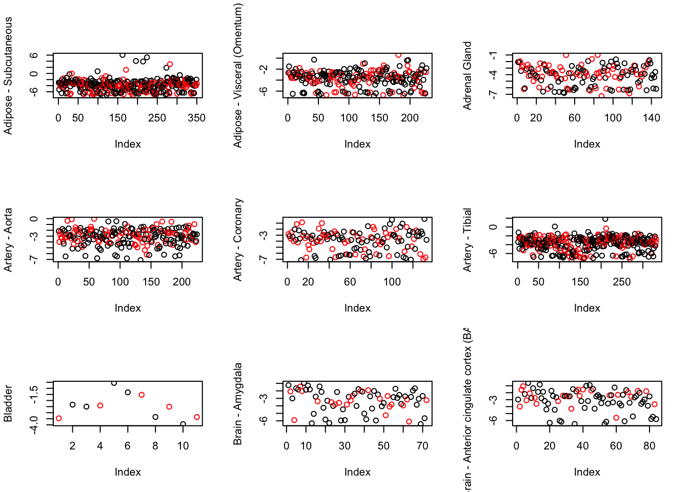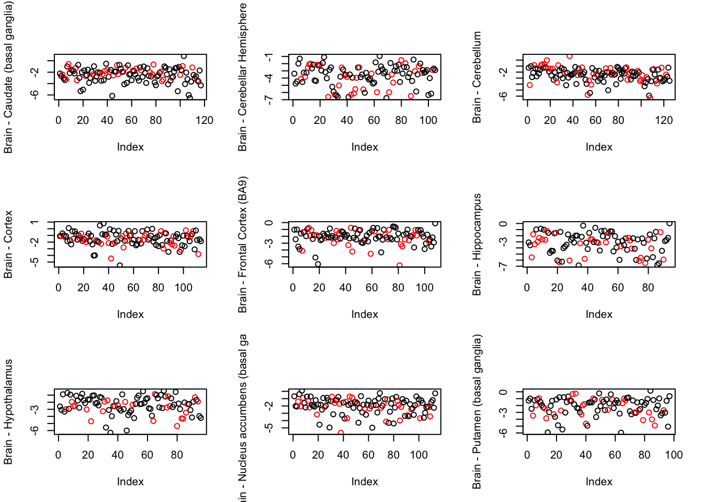

 ### ENSG00000147889 (Breast specific)
### ENSG00000147889 (Breast specific)
indices <- match("ENSG00000147889", gene_names_1)par(mfrow = c(3,3))
for(j in 1:53){
ll <-lm(person_tissue_genes[,j,indices] ~ sample_attributes$SEX)
temp1 <- person_tissue_genes[,j,indices]
temp2 <- sample_attributes$SEX
temp11 <- temp1[which(!is.na(temp1))]
temp21 <- temp2[which(!is.na(temp1))]
temp1_M <- temp11[which(temp21 == 1)]
temp1_F <- temp11[which(temp21 == 2)]
plot(temp11, col=factor(temp21), ylab = dimnames(person_tissue_genes)[[2]][j])
}
 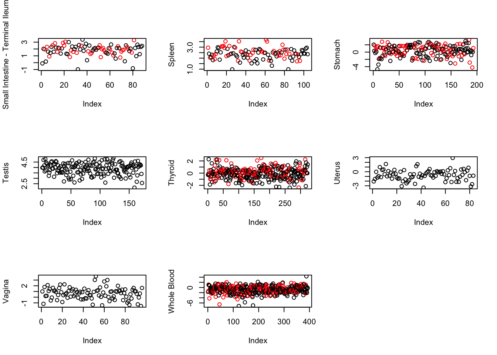
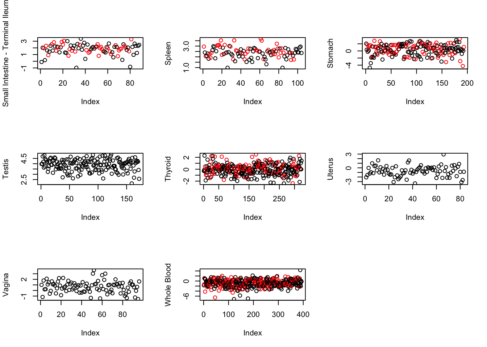
indices <- match("ENSG00000259952", gene_names_1)par(mfrow = c(3,3))
for(j in 1:53){
ll <-lm(person_tissue_genes[,j,indices] ~ sample_attributes$SEX)
temp1 <- person_tissue_genes[,j,indices]
temp2 <- sample_attributes$SEX
temp11 <- temp1[which(!is.na(temp1))]
temp21 <- temp2[which(!is.na(temp1))]
temp1_M <- temp11[which(temp21 == 1)]
temp1_F <- temp11[which(temp21 == 2)]
plot(temp11, col=factor(temp21), ylab = dimnames(person_tissue_genes)[[2]][j])
}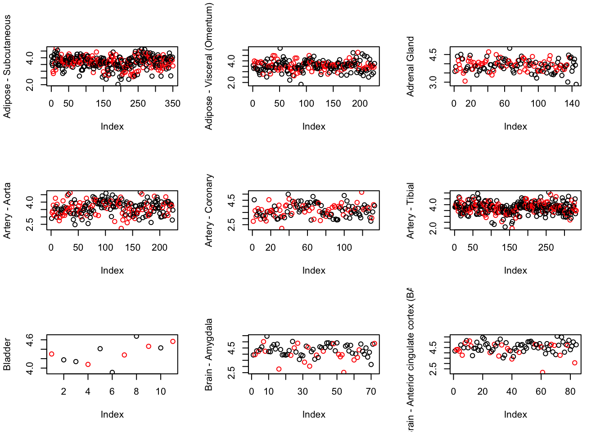
 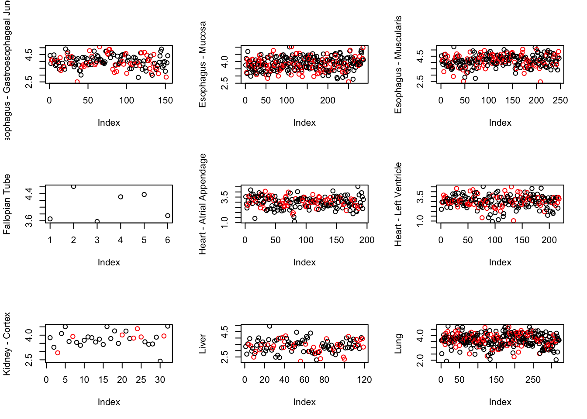
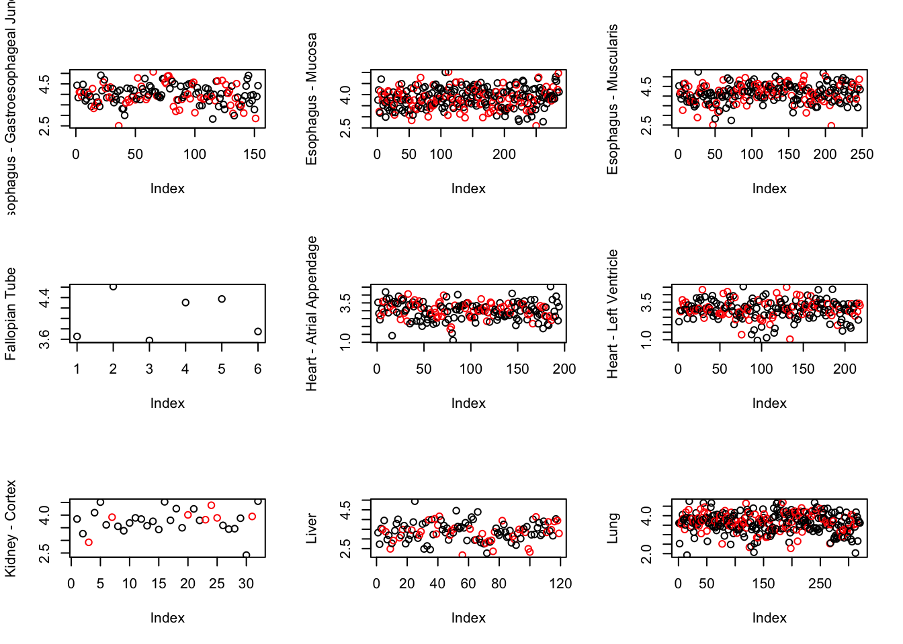
indices <- match("ENSG00000171757", gene_names_1)par(mfrow = c(3,3))
for(j in 1:53){
ll <-lm(person_tissue_genes[,j,indices] ~ sample_attributes$SEX)
temp1 <- person_tissue_genes[,j,indices]
temp2 <- sample_attributes$SEX
temp11 <- temp1[which(!is.na(temp1))]
temp21 <- temp2[which(!is.na(temp1))]
temp1_M <- temp11[which(temp21 == 1)]
temp1_F <- temp11[which(temp21 == 2)]
plot(temp11, col=factor(temp21), ylab = dimnames(person_tissue_genes)[[2]][j])
}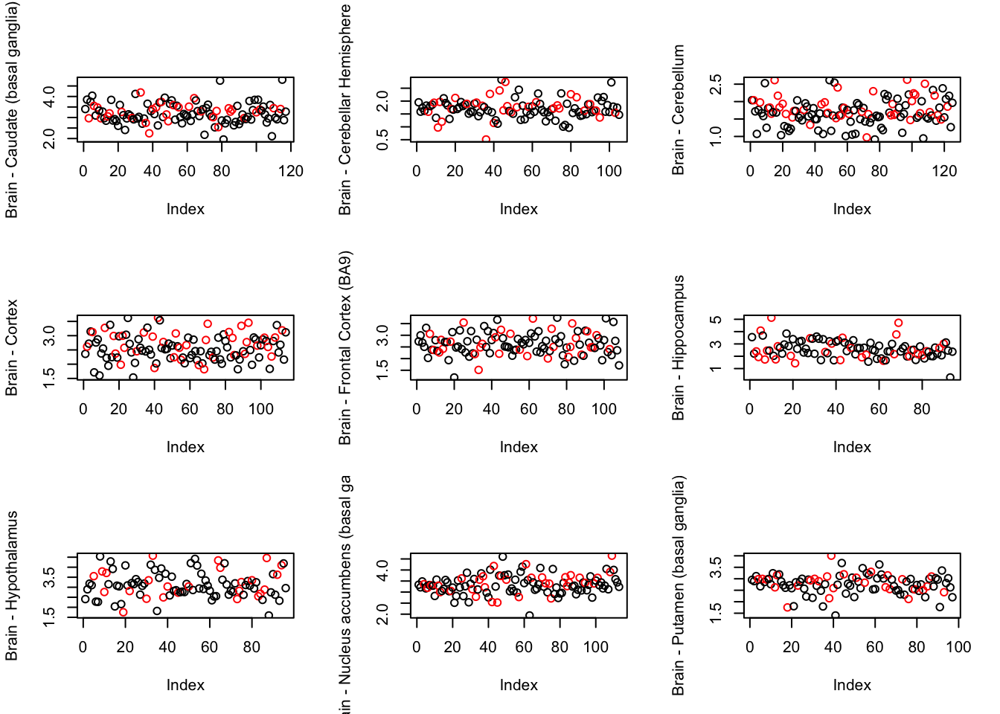


indices <- match("ENSG00000236698", gene_names_1)par(mfrow = c(3,3))
for(j in 1:53){
ll <-lm(person_tissue_genes[,j,indices] ~ sample_attributes$SEX)
temp1 <- person_tissue_genes[,j,indices]
temp2 <- sample_attributes$SEX
temp11 <- temp1[which(!is.na(temp1))]
temp21 <- temp2[which(!is.na(temp1))]
temp1_M <- temp11[which(temp21 == 1)]
temp1_F <- temp11[which(temp21 == 2)]
plot(temp11, col=factor(temp21), ylab = dimnames(person_tissue_genes)[[2]][j])
} 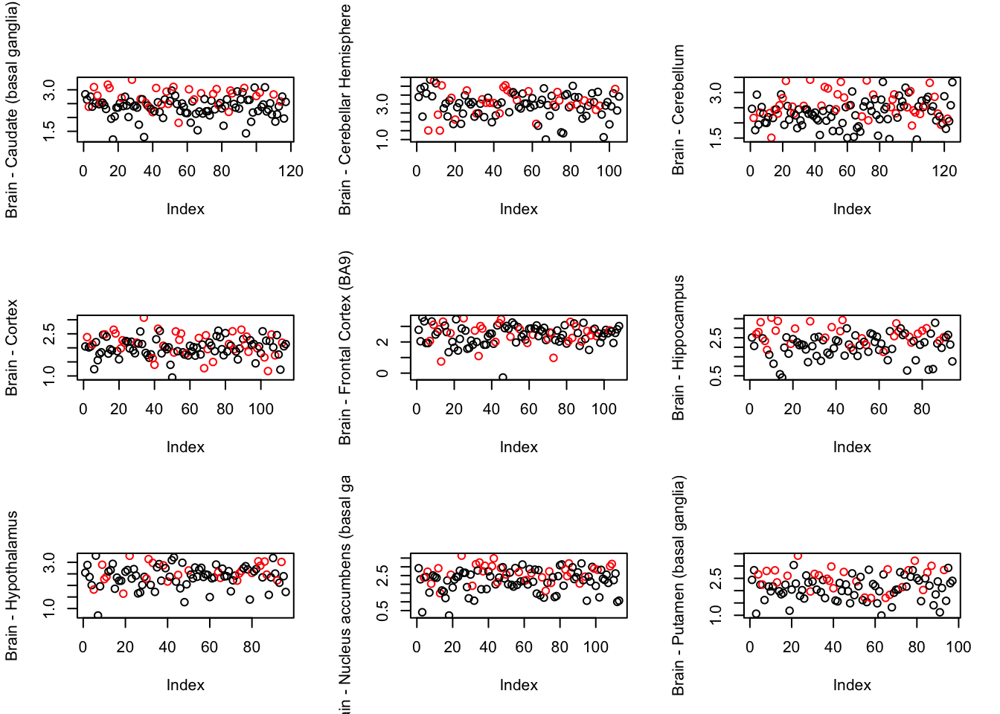
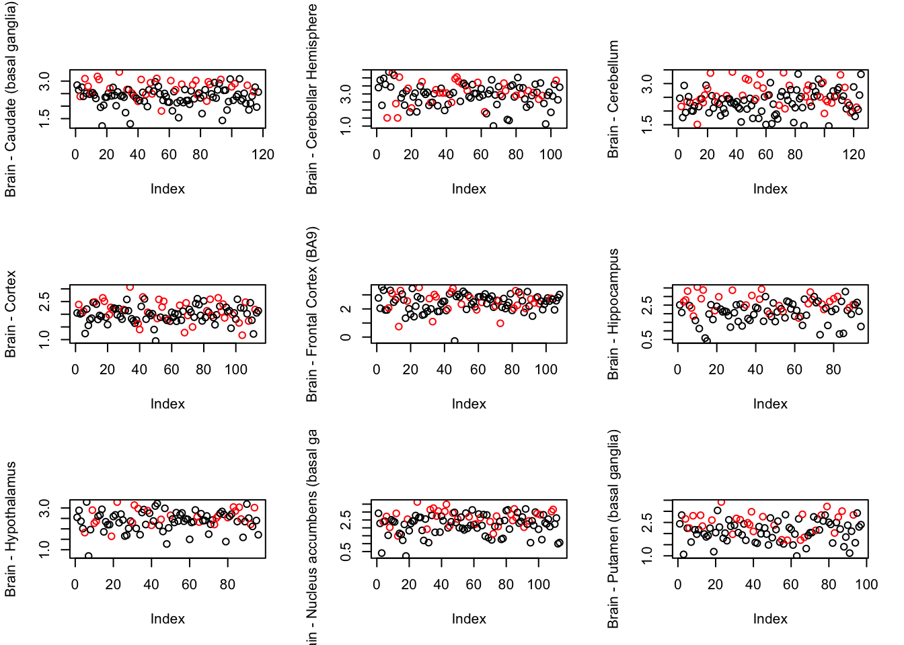


This R Markdown site was created with workflowr